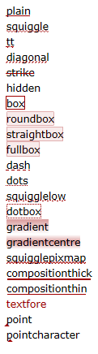

|
|
SciTE Documentation |
| Frequently Asked Questions Scripting Regular Expressions |
Text editing in SciTE works similarly to most Macintosh or Windows editors with the added feature of automatic syntax styling. SciTE can hold multiple files in memory at one time but only one file will be visible. Rectangular blocks of text can be selected in SciTE by holding down the Alt key on Windows or the Ctrl key on GTK while dragging the mouse over the text. The modifier key used on GTK can be changed with the rectangular.selection.modifier property.
There are two panes in SciTE, the editing pane and the output pane. The output pane is located either to the right of the editing pane or below it. Initially it is of zero size, but it can be made larger by dragging the divider between it and the editing pane. The Options | Vertical Split command can be used to move the output pane beneath the editing pane.
SciTE can perform commands to compile or run source files with the output from these commands directed into the output pane.
For example, if Python is installed on the machine, open a new document, type:
print("hi")
as that document's text.
Save the document as printhi.py.
print("hi")
Perform the Tools | Go command.
>pythonw -u printhi.py
hi
>Exit code: 0
The first blue line is from SciTE showing the command it will use to run the program. The black
line is the output from running the Python program. The last blue line is from SciTE showing
that the program has finished and displaying its exit code. An exit code of zero indicates a
successful run. SciTE partially understands the error messages produced by Python, GCC, Visual C++, Borland C++, PHP and other tools which use the same format as one of these. To see this, add a mistake to the Python file by adding a second line to make the file:
print("hi")
mistake
Perform the Tools | Go command. The results should look like:
>pythonw -u printhi.py hi Traceback (most recent call last): File "printhi.py", line 2, in <module> mistake NameError: name 'mistake' is not defined >Exit code: 1
While it is easy to see where the problem is in this simple case, when a file is larger the Tools | Next Message command can be used to view each of the reported errors. Upon performing Tools | Next Message, the first error message in the output pane is highlighted with a yellow background, and an error indicator is displayed for the appropriate line in the editing pane. The caret is moved to this line and the pane is scrolled if needed to show the line. SciTE now looks like this:

SciTE understands both the file name and line number parts of error messages in most cases so can open another file (such as a header file) if errors were caused by that file. This feature may not work where the file name is complicated by containing spaces or ".."
If command execution has failed and is taking too long to complete then the Tools | Stop Executing command can be used.
Tools can be executed in various modes by SciTE which are called "subsystems". Different subsystems are supported on Windows, GTK and macOS. The default subsystem is 0.
| Windows | ||
| 0 | console | Command line programs Do not use for GUI programs as their windows will not be visible. |
| 1 | windows | Programs that create their own windows |
| 2 | shellexec | Run using ShellExecute A good way to open HTML files and similar as it handles this similarly to a user opening the file from the shell. |
| 3 | lua director | Internal extension or director extension |
| 4 | htmlhelp | Open in HtmlHelp program Two part command separated by ! with the first part being the topic to search for and the second the name of the help file |
| 5 | winhelp | Open with WinHelp function Two part command similar to subsystem 4 |
| 7 | immediate | Internal script that is executed immediately instead of being queued. |
| GTK and macOS | ||
| 0 | console | Execute tool and wait for it to finish |
| 2 | shellexec | Execute in background |
| 3 | lua director | Internal extension or director extension |
| 7 | immediate | Internal script that is executed immediately instead of being queued. |
Command line arguments to SciTE include file names, commands and properties. Commands and properties are preceded by "-" and are differentiated by the use in commands of ':' as the first character that is not '.' or alphabetic. Properties use the syntax used in property set files and override any properties set in property files. If there is no value given for a property, it is set to 1. Double quotes may be placed around arguments that contain spaces but they must be placed around the whole argument, not just around a file name, so "-open:x y.txt" works but -open:"x y.txt" doesn't. On Linux, the standard shell quoting is available. The "-p" argument causes SciTE to print the file and then exit.
For Windows:
The command line arguments "-" and "--" (without the quotes) are special in that they read the
stdin stream into the last buffer ("-"), or the output pane ("--"))
The command line argument "-@" (without the quotes) is special in that file names are read from stdin
and opened.
Note: when reading stdin into the output pane, when the property split.vertical is 0, the
output pane is increased to its maximum height. When the property split.vertical is 1, the output pane is
increased to approximately half of the screen width.
Note: If stdin is not redirected, these arguments are effectively ignored.
A few commands are currently available although this will expand in the future. These commands are available:
| Command | Argument |
|---|---|
| close: | |
| cwd: | change working directory |
| find: | search text |
| goto: | line number[,column number] |
| open: | file name |
| loadsession: | file name |
| quit: | |
| replaceall: | search text\000replacement text |
| saveas: | file name |
| Escape Sequence | Meaning |
|---|---|
| \\ | backslash |
| \a | bell |
| \b | backspace |
| \f | form feed |
| \n | new line |
| \r | carriage return |
| \t | tab |
| \v | vertical tab |
| \<ooo> | octal number specified by 1, 2, or 3 digits |
| \x<hh> | hexadecimal number specified by 2 digits |
Command line arguments are evaluated left to right in two phases because opening files requires the user interface to be available and there is also a need to set some user interface properties before the user interface is displayed. The first phase process arguments until just before the first file name would be opened. The second phase processes the remaining arguments.
So, if you need to perform e.g. a find: or a goto: command on a file, you must put the command after the filename, to allow SciTE to open the file before performing the command.
For Windows:
If any simple file name on the command line matches a directory name, the file open dialog appears - this is dependent upon the property
"open.dialog.in.file.directory"
If the property "buffers" is greater than one and the file name matches either a existing file or by means of a wildcard search, one or more files, the
matching files are loaded up to the property "buffers" count. Directories are not considered a match in this case
If the file name is an extension, optionally preceded by a path, and no such simple file name exists, the file open dialog appears, with the given extension as
the filter.
If the file name contains no extension, the property "source.default.extensions" is used to provide default extensions to attempt to match the file name to an
existing file.
SciTE may be configured to use between 1 and 100 buffers each containing a file. The default is 1 and this effectively turns off buffers. With more than one buffer, the Buffers menu can be used to switch between buffers, either by selecting the file name or using the Previous (F6) and Next (Shift+F6) commands. A tab is displayed for each buffer in the tab bar although this can be turned off with the View | Tab Bar command. A tab may be closed by clicking on it with the middle mouse button. Setting large numbers of buffers may cause problems as some menus are fixed in length and thus files beyond that length may not be accessible.
When all the buffers contain files, then opening a new file causes a buffer to be reused which may require a file to be saved. In this case an alert is displayed to ensure the user wants the file saved.
A session is a list of file names. You can save a complete set of your currently opened buffers as a session for fast batch-loading in the future. Sessions are stored as properties files with the extension ".session".
Use File | Load Session and File | Save Session to load/save sessions. You can turn on/off "last session autoloading" using SciTE properties variable "save.session".
If "buffers" variable is set to "0" session management is turned off.
Loading previously saved session will close your currently opened buffers. However you will not lose your edits, because you will be asked to save unsaved buffers first.
Opening a specific file from command line overrides "save.session" variable state. When you start SciTE loading a specific file from command line last session will not restore even if "save.session" variable is set to "1". This makes "save.session" safe to use - you will never open a couple of files when you are trying to open just one, specific file.
By setting "session.bookmarks" and "session.folds" variables bookmarks and folding states of the currently opened buffers are saved in session files and restored when sessions are loaded.
SciTE currently is able to syntax style these languages (* denotes support for folding):
Running and building commands for some of these languages have been set up but should be checked as they will have to be modified to work for many people.
To keep menus to a reasonable length some languages are included but have been commented out in global options. These should be enabled by removing the comment character '#'.
Language settings are determined from the file extension but this can be changed by selecting another language from the Language menu. The language menu can be changed with the menu.language property.
Either dialogs or strips may be used for find and replace, with dialogs being the default. Strips are similar to find in web browsers, appearing at the bottom of the window and are smaller and less distracting than dialogs. They are specified with the find.use.strip and replace.use.strip properties.
SciTE has options to allow searching for words, regular expressions, matching case, in the reverse direction, wrapping around the end of the document. C style backslash escapes which are listed in the command line arguments section, may be used to search and replace control characters. Replacements can be made individually, over the current selection or over the whole file. When regular expressions are used tagged subexpressions can be used in the replacement text. Regular expressions will not match across a line end.
SciTE supports basic regular expressions with tagging.
On Windows, pressing Shift+Enter when the focus is in a text entry field will search in the opposite of the current direction, so will normally search backwards.
Keyboard commands in SciTE mostly follow common Windows and GTK conventions. All movement keys (arrows, page up/down, home and end) allow to extend or reduce a stream selection when holding the Shift key, and a rectangular selection when holding the Shift and Alt keys. Some keys may not be available with some national keyboards or because they are taken by the system such as by a window manager on GTK. The user.shortcuts setting may be used to assign a key to a function. Note that Home key behaviour is changed by the vc.home.key option. Keyboard equivalents of menu commands are listed in the menus. macOS keys differ from the other platforms with the command key ⌘ often used where the Ctrl key is used on Windows and GTK. Some less common commands with no menu equivalent are:
| Command | Key | macOS Key ⇧ shift ⌃ control ⌥ option ⌘ command |
|---|---|---|
| Magnify text size. | Ctrl+Keypad+ | Trackpad expand gesture |
| Reduce text size. | Ctrl+Keypad- | Trackpad reduce gesture |
| Restore text size to normal. | Ctrl+Keypad/ | |
| Cycle through recent files. | Ctrl+Tab | F6 |
| Indent block. | Tab | tab |
| Dedent block. | Shift+Tab | ⇧tab |
| Delete to start of word. | Ctrl+BackSpace | ⌘delete |
| Delete to end of word. | Ctrl+Delete | fn⌘delete |
| Delete to start of line. | Ctrl+Shift+BackSpace | ⇧⌘delete |
| Delete to end of line. | Ctrl+Shift+Delete | fn⇧⌘delete |
| Go to start of document. | Ctrl+Home | ⌘↑ |
| Extend selection to start of document. | Ctrl+Shift+Home | ⇧⌘↑ |
| Go to start of display line. | Alt+Home | fn⌥← |
| Go to end of document. | Ctrl+End | ⌘↓ |
| Extend selection to end of document. | Ctrl+Shift+End | ⇧⌘↓ |
| Go to end of display line. | Alt+End | fn⌥→ |
| Expand or contract a fold point. | Ctrl+Keypad* | |
| Select to next bookmark. | Alt+F2 | |
| Select to previous bookmark. | Alt+Shift+F2 | |
| Find selection. | Ctrl+F3 | |
| Find selection backwards. | Ctrl+Shift+F3 | |
| Scroll up. | Ctrl+Up | |
| Scroll down. | Ctrl+Down | |
| Line cut. | Ctrl+L | ⌘L |
| Line copy. | Ctrl+Shift+T | ⇧⌘T |
| Line delete. | Ctrl+Shift+L | ⇧⌘L |
| Line transpose with previous. | Ctrl+T | ⌘T |
| Selection duplicate. | Ctrl+D | ⌘D |
| Find matching preprocessor conditional, skipping nested ones. | Ctrl+K | |
| Select to matching preprocessor conditional. | Ctrl+Shift+K | |
| Find matching preprocessor conditional backwards, skipping nested ones. | Ctrl+J | |
| Select to matching preprocessor conditional backwards. | Ctrl+Shift+J | |
| Previous paragraph. Shift extends selection. | Ctrl+[ | ⌘[ |
| Next paragraph. Shift extends selection. | Ctrl+] | ⌘] |
| Previous word. Shift extends selection. | Ctrl+Left | ⌃← |
| Next word. Shift extends selection. | Ctrl+Right | ⌃→ |
| Previous word part. Shift extends selection | Ctrl+/ | ⌘/ |
| Next word part. Shift extends selection. | Ctrl+\ | ⌘\ |
| Rectangular block selection. | Alt+Shift+Movement | ⇧⌥Movement |
| Extend rectangular selection to start of line. | Alt+Shift+Home | |
| Extend rectangular selection to end of line. | Alt+Shift+End |
On Windows, a search can be performed in the opposite direction by using Shift+Enter in the Find or Replace strips or dialogs.
To use an abbreviation, type it and use the Expand Abbreviation command or the Ctrl+B key. The abbreviation is replaced by an expansion defined in the Abbreviations file. You can open the Abbreviations file with a command in the Options menu and add abbreviations. There is a default abbreviations file but a different abbreviations file can be set for particular file extensions.
Each line in the files looks like "abbreviation=expansion".
The abbreviations names can have any character (except perhaps control chars,
surely for CR and LF), including high Ascii chars (accented chars).
Names have properties files limits: they cannot start with sharp (#) or space or tab
(but can have spaces inside); and they cannot have '=' character inside.
Abbreviations names are limited to 32 characters. It is probably enough for
abbreviations...
An expansion may contain new line characters indicated by '\n' and
a caret position indicated by the '|' character. To include a literal '|'
character, use '||'.
Some simple examples are included in the distributed Abbreviations file.
When expanding, the names don't need to be separated from the previous text.
Ie. if you define 'é' as 'é', you can expand it inside a word.
When multiple abbreviation names match, the longest matching name will be expanded.
SciTE supports folding for many languages (see the list of languages understood by SciTE for more information.) Fold points are based upon indentation for Python and on counting braces for the other languages.
The fold point markers (in the fold margin) can be clicked to expand and contract folds. Normal clicking does not alter the fold state of child fold points; naturally the children are hidden when the parent fold is contracted, but when the parent is expanded again, each child is still folded or not, as before.
Ctrl+Click on a fold point toggles it and performs the same operation on all children.
Shift+Click on a fold point does not toggle that fold, it expands all the child folds.
Ctrl+Shift+Click in the fold margin expands or contracts all the top level folds. "Toggle all folds" in the View menu does the same; it toggles only top-level folds.
Tip: To open a large code block with all its children folded, fold it with Ctrl+Click, then open it with a normal click. Then on opening a child fold, you will see that the grandchild folds are still closed; if you want those 'grandchild' folds open, Shift+Click the child fold.
Much of SciTE's behaviour can be changed by editing the properties files.
There are four properties files used:
Settings in the local properties file override those in the directory properties file which overrides those in the user properties file which override those in the global properties files. Environment variables are also available as properties and these are overridden by an explicit setting in one of the properties files.
The directory properties file can be used as project options file where user commands and compile, build commands should work in the same manner in subdirectories of a project. The benefit is that local properties files in subdirectories can be replaced by one properties file which is located at the root of the project. The evaluation of the directory properties file is disabled by default and must be enabled by setting the variable properties.directory.enable to 1 in the user or global properties file.
The user properties file is intended for customisation by the user, leaving the global properties file to contain the default options distributed with SciTE. The main use of the local properties files is to change the effects of the Compile, Build and Go commands for the files in a directory. For example, I use the javac compiler from the Java Development Kit for most work, so SciTEGlobal.properties sets the command for compiling .java files to "javac". If I want to use the jvc compiler for the files in one directory, then the SciTE.properties file in that directory contains an entry setting the command to "jvc".
The global properties file should not be edited by the user as it is replaced with each release. Instead copy the property into the user properties file and change it there.
On Windows, the global properties file is located in the directory of the executable. The user properties file is looked for in the user profile directory as set in the USERPROFILE environment variable, or in the directory of the executable if USERPROFILE is not set. For GTK the user properties file is found in the user's home directory and the global properties in a directory set at build time - normally /usr/share/scite.
There are two environment variables, "SciTE_HOME" and "SciTE_USERHOME", which the user may set to override the standard locations of the global and/or the user properties files (this and the following applies to Windows and GTK):
There are commands in the Options menu for opening each of the properties files.
The files are in approximately the same format as Java properties files which have a simple text format. Lines that start with '#' or that are completely blank are comments. Other lines are of the form
variable=value
For long values, a '\' character at the end of the line continues that value on the next line. Space characters are significant in values but leading and trailing spaces are not significant in variable names so " x =1" defines a variable called "x". Values may include the values of other variables by using $(variablename).
The "=" function compares strings (separated by ";") and if they are the same yields "1" else "0". To test if the value of "Status" is "2": $(= $(Status);2)
The "star" function may be used to collect the values of all variables that start with a particular prefix. all.languages=$(star language.) finds every variable that starts with "language." and assigns that to all.languages. This can be used to combine settings from many files for user interface elements such as the Language menu. Within a property file level (local, directory, user, global) the ordering is alphabetically by variable name which allows a degree of control over the ordering. Prefixes that are used by the standard distribution are "*filter.", "*language.", and "*source.patterns." with the initial "*" being a convention that the variables are meant for use in a star function. These prefixes are discussed in the "Defined variables" section.
Colours are defined like HTML with '#' followed by 6 or 8 hexadecimal digits #RRGGBB or #RRGGBBAA defining the red, green, blue, and alpha values of the colour. Alpha is the degree of translucency with 00 completely transparent and FF completely opaque. A 6 digit colour is assumed to be completely opaque. Only a few settings can currently be set translucent with an 8-digit value.
On Windows, values may be scaled using the current screen dots-per-inch so that they use more pixels on high resolution screens and appear a reasonable size. margin.width=$(scale 16) makes the margin 16 pixels wide on a normal screen and 32 pixels wide when the screen is set to 200%.
There are some variables set by the environment to access the name of the current file as well:
| Name | Meaning |
|---|---|
| FilePath | full path of the current file |
| FileDir | directory of the current file without a trailing slash |
| FileName | base name of the current file |
| FileExt | extension of the current file |
| FileNameExt | $(FileName).$(FileExt) |
| RelativePath | relative path from properties file to current file |
| Language | name of the lexer used for the current file |
| SessionPath | full path of the current session |
| CurrentSelection | value of the currently selected text |
| CurrentWord | value of word which the caret is within or near |
| Replacements | number of replacements made by last Replace command |
| SelectionStartColumn | column where selection starts |
| SelectionStartLine | line where selection starts |
| SelectionEndColumn | column where selection ends |
| SelectionEndLine | line where selection ends |
| CurrentMessage | most recently selected output pane message |
| SciteDefaultHome | directory in which the Global Options file is found |
| SciteUserHome | directory in which the User Options file is found |
| SciteDirectoryHome | directory in which the Directory Options file is found |
| APIPath | list of full paths of API files from api.filepattern |
| AbbrevPath | full path of abbreviations file |
| ScaleFactor | the screen's scaling factor with a default value of 100 |
| Appearance | whether the system is using a light (0) or dark (1) theme |
| Contrast | 1 when the system is in high-contrast mode else 0 |
Some features use file name patterns to see which variable to use. For example, the lexer
variable can be specialised for a particular file, or a group of files based upon wildcard
matching so:
lexer.makefile=makefile indicates that the lexer called "makefile" should be used on
files called "makefile".
lexer.*.cxx=cpp indicates that the lexer called "cpp" should be used on files with a
"cxx" extension.
Variable substitution is available on the left hand side of file pattern assignments and
look like this:
file.patterns.html=*.html;*.htm;*.asp;*.shtml
command.go.$(file.patterns.html)=file://$(FilePath)
Wildcard matching treats '?' as matching any character and '*' as matching any number of characters, so "*.mak" will match "proj.mak"; "Makefile*" will match "Makefile.in"; and "*.x?l" will match "data.xml" and "transform.xsl".
Properties files are not treated as having a particular encoding, however individual property values may be treated as having an encoding. For file names, commands, and user interface text, this is UTF-8 so it may be easier to edit properties files as UTF-8 by inserting a coding cookie as explained later. Other properties may be treated as byte sequences (like word.characters.filepattern) or in an implicit encoding (such as keywords.filepattern matching the document encoding) so that it may be better to edit these settings using a non-UTF-8 encoding. Where both UTF-8 and non-UTF-8 values are wanted, two files can be used with different encodings and an import statement to include one in the other.
The 'import' statement includes a properties file as if the text were inline at that point. The imported properties file is either relative to the base file or absolute and a '.properties' extension is assumed. Therefore an "import Lua" statement in c:\os\scite\bin\SciTEGlobal.properties will import c:\os\scite\bin\Lua.properties. Any import statements in imported files are relative to directory of the original file, rather than the current file.
All of the properties files in a directory can be imported with "import *". This does not import generic properties files like user properties or abbreviations. The set of files that are imported can be controlled with the imports.include and imports.exclude properties.
Imported files are not scope walls: properties may be redefined in another file. Thus, if a file contains both "import cplusplus", "import java", and "style.cpp.1=fore:$(comment.colour)" then cplusplus.properties contains "comment.colour=#800000" and java.properties contains "comment.colour=#008000" then the last definition wins and is active for the definitions in the base file as well as any definitions in cplusplus.properties and java.properties.
The 'if' statement takes one argument which is a symbol or expression that may be defined earlier in this property set file or in a base property set. If the symbol evaluates to '0' then the test fails. An empty string or not present symbol evaluates to 0. An expression that evaluates to 0 or empty fails. Into the very top property set is inserted one of 'PLAT_GTK' with value '1', 'PLAT_WIN' with value '1', or 'PLAT_MAC' with value '1'. For both PLAT_GTK and PLAT_MAC, 'PLAT_UNIX' is inserted with value '1'. The system properties Appearance and Contrast are also available for use in expressions. If the test succeeds then following indented statements are executed. When a non-indented statement is found the if clause is finished. Only simple set statements are allowed in if clauses. The evaluation of if statements occurs at read time, not at evaluation time. A reread is forced if either of the system properties changes.
Local and directories properties files may test the value of the current file in "if" tests with $(FilePath), $(FileDir), $(FileName), $(FileExt), $(FileNameExt), and $(RelativePath).
The "match" statement is like "if" but implicitly matches patterns against $(RelativePath), allowing wildcards *, ?; sets [a-z%]; and alternates {cpp,cxx,ixx}. Only Unix-style "/" directory separators may be used as "\" may be used as a quote. If there is no "/" in the pattern then "**/" is prepended to allow matching in any subdirectory. There should be exactly one space between "match" and the pattern and trailing whitespace is removed.
The 'module' statement is meant for use in the single-file distribution Sc1 where all of the standard .properties files are joined together as a resource in the executable. The module statement marks which file each segment originally came from so that the imports.include and imports.exclude properties will work with Sc1 and unwanted properties will not be active. The syntax is "module <name>" and the effect is to either process or ignore all text up to the next module statement depending on whether the name is in imports.include or imports.exclude.
SciTE has 4 properties $(1) .. $(4) which can be used to run commands with changeable parameters. To set the parameter values, use the View | Parameters command to view the modeless Parameters dialog which shows the current values of these parameters and allows setting new values. The accelerator keys for the main window remain active while this dialog is displayed, so it can be used to rapidly run a command several times with different parameters. Alternatively, a command can be made to display the modal Parameters dialog when executed by starting the command with a '*' which is otherwise ignored. If the modeless Parameters dialog is already visible, then the '*' is ignored.
SciTE will automatically detect the encoding scheme used for Unicode files that start with a Byte Order Mark (BOM). The UTF-8 and UTF-16 encodings are recognised including both Little Endian and Big Endian variants of UTF-16.
UTF-8 files will also be recognised when they contain a coding cookie on one of the first two lines. A coding cookie looks similar to "coding: utf-8" ("coding" followed by ':' or '=', optional whitespace, optional quote, "utf-8") and is normally contained in a comment:
For other encodings set the code.page and character.set properties.
Some properties are only available on Windows, GTK, macOS, or Windows & macOS.
|
position.left position.top position.width position.height position.maximize |
Set the initial window size and position. If these are omitted then the environment's defaults are used. If the width or height are -1 or the position.maximize property is set then the window is maximised. | ||||||||||||||||||||||||||||||||||||||||
| position.tile | If there is another copy of SciTE open, set the initial window position to be with the left side at position.left + position.width so that most of the time you can see both copies at once without overlap. Works nicely if position.left set to 0 and position.width set to half of the screen width. | ||||||||||||||||||||||||||||||||||||||||
| buffers |
Set to a number between 1 and 100 to configure that many buffers.
Values outside this range are clamped to be within the range.
The default is 1 which turns off UI features concerned with buffers. This value is read only once, early in the startup process and only from the global and user properties files. So after changing it, restart SciTE to see the effect. |
||||||||||||||||||||||||||||||||||||||||
| buffers.zorder.switching | This setting chooses the ordering of buffer switching when Ctrl+Tab pressed. Set to 1, the buffers are selected in the order of their previous selection otherwise they are chosen based on the buffer number. | ||||||||||||||||||||||||||||||||||||||||
|
are.you.sure are.you.sure.for.build |
The classic GUI question. Normally, when SciTE is about to close a file which has unsaved
edits it asks this annoying question. To turn off the question, set are.you.sure to 0 and
files will be automatically saved without bothering the user. To abandon edits to a file
use the New command. New always asks "Are you sure?" giving an opportunity to not save
the file. When running or building a file, its most likely that you want the file to be saved first. To enable a confirmation dialog for performing Compile, Build or Go commands, set are.you.sure.for.build=1. |
||||||||||||||||||||||||||||||||||||||||
| save.all.for.build | SciTE normally saves the current buffer when performing a Compile, Build, or Go command. To save all buffers set save.all.for.build=1 | ||||||||||||||||||||||||||||||||||||||||
| representations |
Sets up a different way of displaying particular characters.
It contains a list of items separated by ','.
An item may define the representation of a character or set an appearance or colour.
A representation item contains a character followed by '=' and its representation text.
Hexadecimal Unicode escapes may be used: '\x' followed by 2 hexadecimal digits, '\u' followed by 4, or '\U' followed by 8.
Appearance items start with '!' followed by an optional appearance number, '0' for plain or '1' for blobs,
'' for default.
Colour items start with '#' followed by 6 (opaque), 8 (translucent), or 0 (default) hexadecimal digits.
By default, representations are shown in the colour of the style of the original text.
Appearance and colour items continue to affect following representation items until they are changed or reset.
To specify the characters '\', '=', ',', '!', or '#' use an escape.
Only single characters can be represented except for the special case of Windows line ends
Carriage Return + Line Feed. The following example shows 'π' as a blob 'Pi'; '₪' as a blob 'shekel(₪)'; and with View | End of Line turned on Carriage Return + Line Feed appears as translucent red text 'crlf'.
representations=π=Pi,\u20AA=shekel(\u20AA),!0,#FF000090,\x0D\x0A=crlf
|
||||||||||||||||||||||||||||||||||||||||
|
view.whitespace view.indentation.whitespace |
Setting view.whitespace to 1 makes SciTE start up with whitespace visible. Setting view.indentation.whitespace to 0 hides visible whitespace inside indentation. Setting view.indentation.whitespace to 1 makes indentation whitespace visible Setting view.indentation.whitespace to 2 makes indentation whitespace only visible |
||||||||||||||||||||||||||||||||||||||||
|
whitespace.fore whitespace.back |
Sets the colours used for displaying all visible whitespace, overriding any styling applied by the lexer. | ||||||||||||||||||||||||||||||||||||||||
|
whitespace.size |
Sets the size used for displaying all visible spaces, especially for when whitespace.fore is set to be subtle. | ||||||||||||||||||||||||||||||||||||||||
|
view.indentation.guides view.indentation.examine view.indentation.examine.filepattern highlight.indentation.guides |
Setting view.indentation.guides to 1 displays dotted vertical lines within indentation white
space every indent.size columns. Setting view.indentation.examine to 1 to display guides within real indentation whitespace only, 2 according to the next non-empty line (good for Python) or 3 according to both the next and previous non-empty lines (good for most languages). Setting highlight.indentation.guides to 1 highlights the indentation guide associated with a brace when that brace is highlighted. |
||||||||||||||||||||||||||||||||||||||||
| view.eol | Setting this to 1 makes SciTE display the characters that make up line ends. This looks similar to (CR), (LF), or (CR)(LF). This is useful when using files created on another operating system with software that is picky about line ends. | ||||||||||||||||||||||||||||||||||||||||
| eol.mode |
The default EOL mode (characters that make up line ends)
depends on your platform.
You can overwrite this behaviour by setting the property to
LF for UNIX and macOS format
CR for Macintosh format prior to OS X CRLF for DOS/Windows format |
||||||||||||||||||||||||||||||||||||||||
| eol.auto | This setting overrides the eol.mode value and chooses the end of line character sequence based on the current contents of the file when it is opened. The line ending used the most in the file is chosen. | ||||||||||||||||||||||||||||||||||||||||
|
blank.margin.left blank.margin.right output.blank.margin.left |
There is a blank margin on both sides of the text. It is drawn in the background colour
of default text. This defaults to one pixel for both left and right sides but may be
altered with these settings. If output.blank.margin.left is set then it overrides blank.margin.left for the output pane. |
||||||||||||||||||||||||||||||||||||||||
| margin.width | Setting this to a number makes SciTE display a selection margin to the left of the text. The value is the number of pixels wide the selection margin should be. Line markers are displayed in the selection margin area. | ||||||||||||||||||||||||||||||||||||||||
| full.screen.hides.menu | Setting this to 1 hides the menu bar when the Full Screen command is used on Windows. On GTK the menu is always visible. | ||||||||||||||||||||||||||||||||||||||||
| minimize.to.tray | Setting this to 1 minimizes SciTE to the system tray rather than to the task bar. | ||||||||||||||||||||||||||||||||||||||||
|
line.margin.visible line.margin.width |
SciTE is able to display a column of line numbers to the left of the selection margin. Setting line.margin.visible to 1 makes this column visible at startup. The line.margin.width property controls how much space is reserved for the line numbers, in terms of the number of digits that can be displayed. To specify that the margin should expand if needed to accommodate larger line numbers, add a '+' after the number of digits, e.g. line.margin.width=3+. | ||||||||||||||||||||||||||||||||||||||||
| tabbar.visible | Setting tabbar.visible to 1 makes the tab bar visible at start up. The buffers property must be set to a value greater than 1 for this option to work. | ||||||||||||||||||||||||||||||||||||||||
| tabbar.hide.one | Setting tabbar.hide.one to 1 hides the tab bar until there is more than one tab. | ||||||||||||||||||||||||||||||||||||||||
| tabbar.hide.index | Setting tabbar.hide.index to 1 will hide the buffer number in tabs. | ||||||||||||||||||||||||||||||||||||||||
| tabbar.multiline | Setting tabbar.multiline uses multiple lines for the tab bar | ||||||||||||||||||||||||||||||||||||||||
| toolbar.visible | Setting this to 1 makes the tool bar visible at start up. | ||||||||||||||||||||||||||||||||||||||||
| toolbar.large | Setting this to 1 makes the tool bar larger and use larger icons. | ||||||||||||||||||||||||||||||||||||||||
| toolbar.usestockicons | SciTE has a built-in icon set for the toolbar, setting this to 1 makes SciTE more integrated in the GNOME desktop by using the icons provided by the current theme used in GNOME. | ||||||||||||||||||||||||||||||||||||||||
| pathbar.visible | The path bar is a line of text under the tab bar showing the full path of the currently selected tab. Setting pathbar.visible to 1 makes the path bar visible on GTK. | ||||||||||||||||||||||||||||||||||||||||
| pathbar.selectable | Setting pathbar.selectable to 1 makes the visible path bar selectable on GTK. | ||||||||||||||||||||||||||||||||||||||||
| undo.redo.lazy | Setting this to 1 changes the technique used to determine when to enable or disable tool bar buttons to be less accurate. This may improve performance on slow machines. | ||||||||||||||||||||||||||||||||||||||||
|
change.history marker.reverted.to.origin marker.saved marker.modified marker.reverted.to.modified indicator.reverted.to.origin.insertion indicator.reverted.to.origin.deletion indicator.saved.insertion indicator.saved.deletion indicator.modified.insertion indicator.modified.deletion indicator.reverted.to.modified.insertion indicator.reverted.to.modified.deletion |
The change.history property controls whether changes to the document (insertions, deletions, saved chanes, ...) are
shown as margin markers or indicators within text. It is a set of bit flags (1=enable, 2=margin markers, 4=indicators in text) so the most likely settings are 0=disabled; 3=enabled with margin marks, or 7=enabled with margin markers and in-text indicators. There is a default set of visuals for this feature but they may be altered with the marker.* and indicator.* properties. As change history can only be enabled when the file is in its original state, this property only takes effect when a file is loaded. |
||||||||||||||||||||||||||||||||||||||||
| statusbar.visible | Setting this to 1 makes the status bar visible at start up. | ||||||||||||||||||||||||||||||||||||||||
| statusbar.minimum.height | On macOS, when the status bar is turned off, it is still visible but only for this height which defaults to 4 pixels. This is because of a bug that causes window corner debris to appear in the margin when scrolling. This parameter may be set to 0 if the debris does not appear on a particular setup. | ||||||||||||||||||||||||||||||||||||||||
|
statusbar.number statusbar.text.number |
The statusbar.text.1 option defines the information displayed in the status bar
by default on all platforms.
Property values may be used in this text using the $() syntax.
Commonly used properties are: ReadOnly, EOLMode, BufferLength,
NbOfLines (in buffer), SelLength (chars), SelHeight (lines).
Extra properties defined for the status bar are LineNumber, ColumnNumber, and
OverType which is either "OVR" or "INS" depending on the overtype status.
You can also use file properties, which, unlike those above, are not updated
on each keystroke: FileName or FileNameExt, FileDate and FileTime and
FileAttr. Plus CurrentDate and CurrentTime. On Windows only, further texts may be set as statusbar.text.2 .. and these may be cycled between by clicking the status bar. The statusbar.number option defines how many texts are to be cycled through. |
||||||||||||||||||||||||||||||||||||||||
| buffered.draw |
Setting this to 1 rather than the default 0 may make SciTE
draw output into a buffer bitmap first and then to the screen instead of directly to the
screen. On old platforms and some unusual modes this can result in less flickering.
but is slower. Has no effect on macOS and may have no effect on other platforms or technology choices. |
||||||||||||||||||||||||||||||||||||||||
| phases.draw |
There are two orders in which the text area may be drawn offering a trade-off
between speed and allowing all pixels of text to be seen even when they overlap
other elements.
There may be some flickering on some platforms if buffered drawing is not turned on. Two phase drawing (phases.draw=1) draws all the backgrounds of a line first and then draws the text in transparent mode. Lines are drawn separately and no line will overlap another so any pixels that overlap into another line such as extreme ascenders and descenders on characters will be cut off. Multiple phase drawing (phases.draw=2) draws the whole area multiple times, once for each feature, building up the the appearance in layers or phases. The coloured backgrounds for all lines are drawn before any text and then all the text is drawn in transparent mode over this combined background without clipping text to the line boundaries. This allows extreme ascenders and descenders to overflow into the adjacent lines. This mode is incompatible with buffered.draw so will be treated as phases.draw=1 when buffered.draw=1. The default is for drawing to be two phase. Single phase drawing (phases.draw=0) is a deprecated mode that was used in previous releases. While it can still be enabled, it is not supported and may cause incorrect drawing. |
||||||||||||||||||||||||||||||||||||||||
| technology | On Windows Vista or newer, this can be set to 1, 2 or 3 to use the Direct2D and DirectWrite APIs for higher quality antialiased drawing or 0 to use the older GDI. The default is 1. The value 2 causes the frame to be retained after presentation which may prevent drawing failures on some cards and drivers. 3 may also prevent drawing failures on some cards and drivers but with lower speed. | ||||||||||||||||||||||||||||||||||||||||
|
load.on.activate save.on.deactivate |
The load.on.activate property causes SciTE to check whether the current file has been
updated by another process whenever it is activated. This is useful when another editor
such as a WYSIWYG HTML editor, is being used in conjunction with SciTE. The save.on.deactivate property causes SciTE to save the file whenever the SciTE application loses focus. This is useful when developing web pages and you want to often check the appearance of the page in a browser. |
||||||||||||||||||||||||||||||||||||||||
| are.you.sure.on.reload | When both this and load.on.activate are set to 1, SciTE will ask if you really want to reload the modified file, giving you the chance to keep the file as it is. By default this property is disabled, causing SciTE to reload the file without bothering you. | ||||||||||||||||||||||||||||||||||||||||
| save.on.timer | The save.on.timer property causes SciTE to save modified files whenever there have been no modifications for the number of seconds specified by the property. When set to 0, the default, this feature is disabled and files are not automatically saved. | ||||||||||||||||||||||||||||||||||||||||
| reload.preserves.undo | When set to 1, reloading a file does not delete all the undo history. This is useful when load.on.activate is used in conjunction with filter commands. | ||||||||||||||||||||||||||||||||||||||||
| check.if.already.open | This option allows opening files in an existing instance of SciTE rather than always opening a new instance. When this option is set and SciTE is started, it checks to see if there are any other instances of SciTE open. If there is, another instance is asked to open the file and become active and the new instance exits. On Windows, the instance with the Options | Open Files Here menu item checked opens the file. On GTK, an arbitrary instance opens the file. | ||||||||||||||||||||||||||||||||||||||||
| read.only | When this option is set then opened documents are initially read only. New files are not affected by this setting. | ||||||||||||||||||||||||||||||||||||||||
| read.only.indicator | If this option is set, SciTE indicates that the buffer is read only by adding a "pipe"-character (|) to the file name in the tab bar and in the buffer menu. | ||||||||||||||||||||||||||||||||||||||||
|
background.open.size background.save.size |
This setting controls whether files are opened and saved without blocking the user interface while they are being read or written. Files larger than the given size in bytes will be read or written in the background while smaller files will be read or written directly and SciTE will not respond until the file access is completed. The default value is -1 allows background processing for all files. For saving, the size used is the in-memory size in bytes which will differ from the on-disk size when the UTF-16 encoding is used. | ||||||||||||||||||||||||||||||||||||||||
| file.size.large |
This setting controls whether files are opened into a mode that will work with files larger
than 2 gigabytes called 'large mode'.
Files larger than the given size in bytes will be opened in large mode.
Without this setting, SciTE will use less memory but will fail for files that are
larger than 2 gigabytes when opened or grow larger than 2 gigabytes.
The default value is 100000000 so files larger than 100,000,000 bytes are opened in large mode. The large mode only works when SciTE is built as a 64-bit application. |
||||||||||||||||||||||||||||||||||||||||
| file.size.no.styles | Very large files take a long time to style completely and this can make editing too slow. Files larger than the given size in bytes will be opened with styling turned off. It is only the file size at opening that is considered - styling will not turn on or off when the file size changes during editing. The default value is 1000000 so files larger than 1,000,000 bytes are opened without styling. | ||||||||||||||||||||||||||||||||||||||||
| temp.files.sync.load |
Files dropped on SciTE on Windows are normally opened asynchronously
as there may be a long list. However, files dragged from some applications
such as 7-Zip may only exist for a moment in the temporary directory and
be deleted once the drop has occurred. Setting this to 1 makes SciTE open dropped files in the temporary directory immediately. |
||||||||||||||||||||||||||||||||||||||||
| quit.on.close.last | If this option is set, SciTE will close when its last buffer has been closed, e.g. with File/Close. (By default, if this option is not set, SciTE will remain open and will create a new blank document when its last buffer is closed.) | ||||||||||||||||||||||||||||||||||||||||
| highlight.current.word | When set to 1, all occurrences of the selected word are highlighted with the colour defined by highlight.current.word.colour. By default, this option is disabled. (See indicators.alpha and indicators.under) | ||||||||||||||||||||||||||||||||||||||||
| highlight.current.word.indicator |
If set, defines the appearance of the current word highlight. This is a
structured property with multiple attributes similar to:
highlight.current.word.indicator=style:roundbox,colour:#0080FF,under,outlinealpha:140,fillalpha:80
|
||||||||||||||||||||||||||||||||||||||||
| highlight.current.word.colour |
The option highlight.current.word.colour defines the colour of highlight.
The default value is #A0A000. Overridden by highlight.current.word.indicator. |
||||||||||||||||||||||||||||||||||||||||
| highlight.current.word.by.style | If the option highlight.current.word.by.style is set, then only words with the same style are highlighted (e.g. if you select this word in a comment, then only occurrences of words in comments are selected). | ||||||||||||||||||||||||||||||||||||||||
| spell.ignore.filepattern |
Specifies a list of words that should not be treated as spelling mistakes for a particular filepattern.
For example, in HTML, tag names that are not words are common so turn off the spelling highlight with:
spell.ignore.*.html=br ul toc valign blockquote kbd thead tr th tbody colspan
To turn spell checking completely off for a filepattern use the value *.
|
||||||||||||||||||||||||||||||||||||||||
| spell.mistake.indicator |
If set, defines the appearance of spelling mistakes. This is a
structured property with multiple attributes similar to:
spell.mistake.indicator=style:squigglepixmap,colour:#FF0000
|
||||||||||||||||||||||||||||||||||||||||
| rectangular.selection.modifier |
On GTK, the modifier key used to make rectangular selections can be set with this
property. Valid options are 2 (Ctrl), 4 (Alt) or 8 (Super). Super is often assigned to the
Windows/Start key on Windows keyboards or the Command key on Mac keyboards.
Since the Alt key is often used by window managers to move windows, this will need to be configured off to use the combination in SciTE. This can be done for Metacity using gconf-editor to modify the /apps/metacity/general/mouse_button_modifier. A valid value here is <Super>. |
||||||||||||||||||||||||||||||||||||||||
|
selection.fore selection.back |
Sets the colours used for displaying selected text. If one of these is not set then that attribute is not changed for the selection. The default is to show the selection by changing the background to light grey and leaving the foreground the same as when it was not selected. When selection.layer is under text (1) or over text (2), selection.back may be an 8 digit number with translucency as the last two digits. On macOS, the system's selection background may be used when selection.back is set to empty. | ||||||||||||||||||||||||||||||||||||||||
| selection.layer | Sets the layer for drawing the selection background: base opaque (0), under text (1), or over text (2). | ||||||||||||||||||||||||||||||||||||||||
|
selection.additional.fore selection.additional.back |
Similar to selection.fore, selection.back. Sets the colours used for displaying additional selections when multiple selections are enabled or a rectangular selection is made. | ||||||||||||||||||||||||||||||||||||||||
|
selection.secondary.fore selection.secondary.back |
Similar to selection.fore and selection.back. Sets the colours used for displaying selections when another window holds the primary selection. | ||||||||||||||||||||||||||||||||||||||||
|
selection.inactive.fore selection.inactive.back |
Similar to selection.fore and selection.back. Sets the colours used for displaying selections when the window is inactive because it does not have focus. | ||||||||||||||||||||||||||||||||||||||||
| selection.always.visible | Set to 1 to show the selection coloured even when SciTE is not the active application. Default is 1. | ||||||||||||||||||||||||||||||||||||||||
|
caret.fore caret.additional.fore |
Sets the colour used for the main and additional carets. | ||||||||||||||||||||||||||||||||||||||||
| caret.additional.blinks | Set whether all carets blink. 0 means only the main caret blinks. Default is 1. | ||||||||||||||||||||||||||||||||||||||||
|
caret.line.back caret.line.layer |
Sets the background colour and translucency used for line containing the caret. caret.line.back is the layer to draw the caret line: base opaque (0), under text (1), or over text (2). | ||||||||||||||||||||||||||||||||||||||||
| caret.line.frame | This setting allows the caret line to be drawn as a rectangle inside the line instead of the whole line. It sets the width of rectangles sides. A setting of 0 returns to drawing the whole line. | ||||||||||||||||||||||||||||||||||||||||
| caret.period | Sets the rate at which the caret blinks. The value is the time in milliseconds that the caret is visible before it is switched to invisible. It then stays invisible for the same period before appearing again. A value of 0 stops the caret from blinking. | ||||||||||||||||||||||||||||||||||||||||
| caret.style | Sets the style of the caret. see SCI_SETCARETSTYLE for possible values. | ||||||||||||||||||||||||||||||||||||||||
| caret.width | Sets the width of the caret in pixels. Only values of 1, 2, or 3 work. | ||||||||||||||||||||||||||||||||||||||||
| selection.rectangular.switch.mouse | Sets whether switching to rectangular selection mode while making a selection with the mouse is allowed (1) or not (0). Default is 0. | ||||||||||||||||||||||||||||||||||||||||
|
selection.multiple selection.additional.typing selection.multipaste |
Set selection.multiple to make multiple selections with the mouse by holding down the Ctrl key. Set selection.additional.typing to 1. to allow typing, backspace and delete to affect all selections including each line of rectangular selections. When set to 0, typing only affects the main selection. Set selection.multipaste to 1 to paste at all selections. If set to 0, the paste will only be inserted at the last selection. |
||||||||||||||||||||||||||||||||||||||||
| virtual.space | Determines whether the caret can be moved into virtual space, that is, beyond the last character on a line. Set to 1 to allow virtual space when making a rectangular selection, 2 to allow the arrow keys or a mouse click to move the caret into virtual space, and 3 to allow both. 4 may be added to prevent left arrow from wrapping to previous line. | ||||||||||||||||||||||||||||||||||||||||
|
caret.policy.xslop caret.policy.width caret.policy.xstrict caret.policy.xeven caret.policy.xjumps caret.policy.yslop caret.policy.lines caret.policy.ystrict caret.policy.yeven caret.policy.yjumps |
If slop is set, we can define a slop value: width for xslop, lines for yslop. If strict is set, the policy is enforced... strictly. If jumps is set, the display is moved more energetically
so the caret can move in the same direction longer before the policy is applied again. If even is not set, instead of having symmetrical UZs,
the left and bottom UZs are extended up to right and top UZs respectively. See the table below to see how these settings interact. |
||||||||||||||||||||||||||||||||||||||||
|
visible.policy.strict visible.policy.slop visible.policy.lines |
Determines how the display area is determined after a Go to command or equivalent such as a Find or Next Message. Options are similar to caret.policy.*. | ||||||||||||||||||||||||||||||||||||||||
|
edge.mode edge.column edge.colour |
Indicates long lines. The default edge.mode, 0, does not indicate long lines. An edge.mode of 1 uses a vertical line to indicate the specified column and an edge.mode of 2 changes the background colour of characters beyond that column. For proportional fonts, an edge.mode of 2 is more useful than 1. | ||||||||||||||||||||||||||||||||||||||||
| control.char.symbol | Sets the character to use to indicate control characters. If not set, control characters are shown as mnemonics. | ||||||||||||||||||||||||||||||||||||||||
|
error.marker.fore error.marker.back |
The colours used to indicate error and warning lines in both the edit and output panes are set with these two values. If there is a margin on a pane then a symbol is displayed in the margin to indicate the error message for the output pane or the line causing the error message for the edit pane. The error.marker.back is used as the fill colour of the symbol and the error.marker.fore as the outline colour. If there is no margin then the background to the line is set to the error.marker.back colour. | ||||||||||||||||||||||||||||||||||||||||
|
error.inline style.error.0 style.error.1 style.error.2 style.error.3 |
To see error messages interspersed with the source code, set error.inline=1. Different visual styles are used for different severities: style.error.0 is the default; style.error.1 for warnings; style.error.2 for errors; and style.error.3 for fatal errors. The severity of a message is inferred from finding the text "warning", "error", or "fatal" in the message. |
||||||||||||||||||||||||||||||||||||||||
|
bookmark.fore bookmark.back bookmark.alpha bookmark.stroke.width |
The colours used to display bookmarks in the margin. If bookmark.fore is empty then
a blue sphere is used. When the margin is turned off, bookmarks are shown by a
change in the background colour of the line with the translucency set with bookmark.alpha. The stroke width of the symbol can be set in hundredths of a pixel with bookmark.stroke.width. When using a high DPI display or large fonts it can be worthwhile setting bookmark.stroke.width to 200. |
||||||||||||||||||||||||||||||||||||||||
| bookmark.symbol | The visual style used to display bookmarks in the margin. Set to a numeric value according to the symbols defined in SCI_MARKERDEFINE. | ||||||||||||||||||||||||||||||||||||||||
| find.mark.indicator |
If set, then the Mark All command in the Find dialog will draw indicators over
each string found. This is a
structured property with multiple attributes similar to:
find.mark.indicator=style:roundbox,colour:#0080FF,under,outlinealpha:140,fillalpha:80
|
||||||||||||||||||||||||||||||||||||||||
| find.mark |
If set, then the Mark All command in the Find dialog will draw translucent boxes over
each string found. (See indicators.alpha and indicators.under) Overridden by find.mark.indicator. |
||||||||||||||||||||||||||||||||||||||||
| indicators.alpha |
This property defines the alpha level for indicators (default value is 30).
The alpha value can range from 0 (completely transparent) to 255 (no transparency).
A value out of this range is ignored and the default one is used. Will be overridden by specific indicator definitions such as find.mark.indicator. |
||||||||||||||||||||||||||||||||||||||||
| indicators.under |
If set, the indicators are drawn under text or over (by default, it is over). Will be overridden by specific indicator definitions such as find.mark.indicator. |
||||||||||||||||||||||||||||||||||||||||
| error.select.line | When a command execution produces error messages, and you step with F4 key through the matching source lines, this option selects the line where the error occurs. Most useful if the error message contains the column of error too as the selection will start at the column of the error. The error message must contain the column and must be understood by SciTE (currently only supported for HTML Tidy). The tab size assumed by the external tool must match the tab size of your source file for correct column reporting. | ||||||||||||||||||||||||||||||||||||||||
| openpath.filepattern | Defines a path for the Open Selected Filename command in the File
menu. The path is searched if the selected filename doesn't contain an
absolute path or the file is not found in the document directory. The
directories in openpath are separated by ';' on Windows and ':' on macOS and GTK. An openpath setting may look like:
openpath.*.txt=c:\dos\;f:\;
openpath.$(file.patterns.cpp)=$(cpp_includes) |
||||||||||||||||||||||||||||||||||||||||
| open.suffix.filepattern | Defines a suffix to add to the selected file name for the
Open Selected Filename command in the File menu.
This is used in languages where the suffix is not given when accessing a file.
An example is python where "import xlib" will most often mean to import from
a file called "xlib.py". An open.suffix setting may look like: open.suffix.*.py=.py
|
||||||||||||||||||||||||||||||||||||||||
|
strip.trailing.spaces strip.trailing.spaces.filepattern |
Strips trailing white spaces from the file while saving. The global strip.trailing.spaces property can be overridden for files that match a pattern by using the file pattern forms:
strip.trailing.spaces.*.yaml=0
or strip.trailing.spaces.$(file.patterns.yaml)=0 |
||||||||||||||||||||||||||||||||||||||||
| ensure.final.line.end | Ensures file ends with a line end when saved. | ||||||||||||||||||||||||||||||||||||||||
| ensure.consistent.line.ends | Ensures all lines end with the current Line End Characters setting when saved. | ||||||||||||||||||||||||||||||||||||||||
| abbreviations.filepattern |
Loads an abbreviations file for a particular language overriding the default abbreviations file.
For example,
abbreviations.*.c=$(SciteUserHome)/c_abbrev.properties
|
||||||||||||||||||||||||||||||||||||||||
| api.filepattern |
Loads a set of API files for a particular language.
If there is more than one API file then the file names are separated by ';'.
API files contain a sorted list of
identifiers and function prototypes, one per line. If there are multiple files then each file should
end with a line end or the next file's first line will merge with the previous file's last line.
The "Complete Symbol" command
looks at the characters before the caret and displayed the subset of the API file
starting with that string. When an opening brace is typed, the file is searched for the
text preceding the caret and if a function prototype is found then it is displayed as a
calltip.
For example, the setting
api.*.c=w.api
could be used with a w.api file containing
fclose(FILE* fileClose)
to provide autocompletion and calltips for some of the C file functions. It is best to
use the full path to the API file as otherwise the current directory is used.
See the Creating API files section for ways to create API files.
FILE fopen(const char* szFileName, const char* szMode) fpos_t fread(void* buf, size_t size, size_t count, FILE* file) fseek(FILE* file, long lnOffset, int nOrigin) |
||||||||||||||||||||||||||||||||||||||||
| autocomplete.choose.single | When set to 1 and an autocompletion list is invoked and there is only one element in that list then that element is automatically chosen. This means that the matched element is inserted and the list is not displayed. | ||||||||||||||||||||||||||||||||||||||||
|
autocomplete.lexer.ignorecase autocomplete.*.ignorecase |
When set to 1 the API file is searched in a case insensitive way to find elements for autocompletion lists. Otherwise matches only occur if case also matches. The * form is used if there is no lexer specific setting. | ||||||||||||||||||||||||||||||||||||||||
|
autocomplete.lexer.start.characters autocomplete.*.start.characters |
If this setting is not empty, typing any of the characters will cause autocompletion to start. For example, if autocomplete.python.start.characters=. and the API file for Python contains "string.rjust" and "string.replace" then typing "string." will cause the autocompletion to display both identifiers. The * form is used if there is no lexer specific setting. | ||||||||||||||||||||||||||||||||||||||||
|
autocomplete.lexer.fillups autocomplete.*.fillups |
If this setting is not empty, typing any of the characters will cause autocompletion to complete. For example, if autocomplete.python.fillups=( and the API file for Python contains "string.replace" then typing "string.r(" will cause "string.replace(" to be inserted. The * form is used if there is no lexer specific setting. | ||||||||||||||||||||||||||||||||||||||||
|
autocomplete.fore autocomplete.back autocomplete.selected.fore autocomplete.selected.back |
If these settings are not empty, they specify colours to use in autocompletion lists. The default values depend on the platform and system settings. | ||||||||||||||||||||||||||||||||||||||||
|
autocomplete.lexer.typesep autocomplete.*.typesep |
If this setting is not empty, it specifies the character used to separate autocompletion choices from type icon IDs. The default value is '?'. | ||||||||||||||||||||||||||||||||||||||||
| autocomplete.visible.item.count | Set the number of items that are visible in autocompletion lists. The default is 9. | ||||||||||||||||||||||||||||||||||||||||
| autocompleteword.automatic | If this setting is 1 then when typing a word, if only one word in the document starts with that string then an autocompletion list is displayed with that word so it can be chosen by pressing Tab. | ||||||||||||||||||||||||||||||||||||||||
|
calltip.lexer.ignorecase calltip.*.ignorecase |
When set to 1 the API file is searched in a case insensitive way to find the function which will have its signature displayed as a calltip. The * form is used if there is no lexer specific setting. | ||||||||||||||||||||||||||||||||||||||||
|
calltip.lexer.use.escapes calltip.*.use.escapes |
When set to 1 the API file may contain C style backslash escapes which are listed in the command line arguments section. The * form is used if there is no lexer specific setting. | ||||||||||||||||||||||||||||||||||||||||
|
calltip.lexer.word.characters calltip.*.word.characters |
To determine the identifier to look up for calltips, a search is performed allowing the characters in this set to be included in the identifier. While the same setting can be used as for word.characters, sometimes additional characters may be allowed. For example, in Python, '.' is not normally considered part of a word when selecting text, but it is good to allow "string.replace" to show a calltip so calltip.python.word.characters=._$(chars.alpha) would be a reasonable setting. The * form is used if there is no lexer specific setting. | ||||||||||||||||||||||||||||||||||||||||
|
calltip.lexer.parameters.start calltip.lexer.parameters.end calltip.lexer.parameters.separators calltip.*.parameters.start calltip.*.parameters.end calltip.*.parameters.separators |
Allows you to specify characters which start, end and separate parameters. For most common languages, it's usually left brace for start, right brace for end and comma or semicolon for separator. E.g. CSS has colon for start, space for separator and nothing for end. You can specify more characters for each property. The * form is used if there is no lexer specific setting. | ||||||||||||||||||||||||||||||||||||||||
|
calltip.lexer.end.definition calltip.*.end.definition |
API files may contain explanatory text after each function definition. To display the explanation on a second line, set this property to the character used at the end of the definition part. For most languages, this is ')'. The * form is used if there is no lexer specific setting. | ||||||||||||||||||||||||||||||||||||||||
| xml.auto.close.tags | For XML and HTML, setting this property to 1 will automatically insert the corresponding end tag when '>' is typed to end a start tag. Type "<td>" and the result will be "<td></td>" with the caret placed between the tags. | ||||||||||||||||||||||||||||||||||||||||
| asp.default.language | Script in ASP code is initially assumed to be in JavaScript. To change this to VBScript set asp.default.language to 2. Python is 3. | ||||||||||||||||||||||||||||||||||||||||
| fold.abl.comment.multiline | Set this property to 0 to disable folding multi-line comments when fold.comment=1. | ||||||||||||||||||||||||||||||||||||||||
| fold.abl.syntax.based | Set this property to 0 to disable syntax based folding. | ||||||||||||||||||||||||||||||||||||||||
| fold.asm.comment.explicit | This option enables folding explicit fold points when using the Asm lexer. Explicit fold points allows adding extra folding by placing a ;{ comment at the start and a ;} at the end of a section that should fold. | ||||||||||||||||||||||||||||||||||||||||
| fold.asm.comment.multiline | Set this property to 1 to enable folding multi-line comments. | ||||||||||||||||||||||||||||||||||||||||
| fold.asm.explicit.anywhere | Set this property to 1 to enable explicit fold points anywhere, not just in line comments. | ||||||||||||||||||||||||||||||||||||||||
| fold.asm.explicit.end | The string to use for explicit fold end points, replacing the standard ;}. | ||||||||||||||||||||||||||||||||||||||||
| fold.asm.explicit.start | The string to use for explicit fold start points, replacing the standard ;{. | ||||||||||||||||||||||||||||||||||||||||
| fold.asm.syntax.based | Set this property to 0 to disable syntax based folding. | ||||||||||||||||||||||||||||||||||||||||
| fold.at.else | This option enables C++ folding on a "} else {" line of an if statement. | ||||||||||||||||||||||||||||||||||||||||
| fold.baan.inner.level | Set this property to 1 to enable folding of inner levels of select statements.Disabled by default. case and if statements are also eligible | ||||||||||||||||||||||||||||||||||||||||
| fold.baan.keywords.based | Set this property to 0 to disable keywords based folding, which is folding based on for, if, on (case), repeat, select, while and fold ends based on endfor, endif, endcase, until, endselect, endwhile respectively.Also folds declarations which are grouped together. | ||||||||||||||||||||||||||||||||||||||||
| fold.baan.sections | Set this property to 0 to disable folding of Main Sections as well as Sub Sections. | ||||||||||||||||||||||||||||||||||||||||
| fold.baan.syntax.based | Set this property to 0 to disable syntax based folding, which is folding based on '{' & '('. | ||||||||||||||||||||||||||||||||||||||||
| fold.basic.comment.explicit | This option enables folding explicit fold points when using the Basic lexer. Explicit fold points allows adding extra folding by placing a ;{ (BB/PB) or '{ (FB) comment at the start and a ;} (BB/PB) or '} (FB) at the end of a section that should be folded. | ||||||||||||||||||||||||||||||||||||||||
| fold.basic.explicit.anywhere | Set this property to 1 to enable explicit fold points anywhere, not just in line comments. | ||||||||||||||||||||||||||||||||||||||||
| fold.basic.explicit.end | The string to use for explicit fold end points, replacing the standard ;} (BB/PB) or '} (FB). | ||||||||||||||||||||||||||||||||||||||||
| fold.basic.explicit.start | The string to use for explicit fold start points, replacing the standard ;{ (BB/PB) or '{ (FB). | ||||||||||||||||||||||||||||||||||||||||
| fold.basic.syntax.based | Set this property to 0 to disable syntax based folding. | ||||||||||||||||||||||||||||||||||||||||
| fold.cil.comment.multiline | Set this property to 0 to disable folding multi-line comments when fold.comment=1. | ||||||||||||||||||||||||||||||||||||||||
| fold.comment | This option enables folding multi-line comments and explicit fold points when using the C++ lexer. Explicit fold points allows adding extra folding by placing a //{ comment at the start and a //} at the end of a section that should fold. | ||||||||||||||||||||||||||||||||||||||||
| fold.cpp.comment.explicit | Set this property to 0 to disable folding explicit fold points when fold.comment=1. | ||||||||||||||||||||||||||||||||||||||||
| fold.cpp.comment.multiline | Set this property to 0 to disable folding multi-line comments when fold.comment=1. | ||||||||||||||||||||||||||||||||||||||||
| fold.cpp.explicit.anywhere | Set this property to 1 to enable explicit fold points anywhere, not just in line comments. | ||||||||||||||||||||||||||||||||||||||||
| fold.cpp.explicit.end | The string to use for explicit fold end points, replacing the standard //}. | ||||||||||||||||||||||||||||||||||||||||
| fold.cpp.explicit.start | The string to use for explicit fold start points, replacing the standard //{. | ||||||||||||||||||||||||||||||||||||||||
| fold.cpp.preprocessor.at.else | This option enables folding on a preprocessor #else or #endif line of an #if statement. | ||||||||||||||||||||||||||||||||||||||||
| fold.cpp.syntax.based | Set this property to 0 to disable syntax based folding. | ||||||||||||||||||||||||||||||||||||||||
| fold.d.comment.explicit | Set this property to 0 to disable folding explicit fold points when fold.comment=1. | ||||||||||||||||||||||||||||||||||||||||
| fold.d.comment.multiline | Set this property to 0 to disable folding multi-line comments when fold.comment=1. | ||||||||||||||||||||||||||||||||||||||||
| fold.d.explicit.anywhere | Set this property to 1 to enable explicit fold points anywhere, not just in line comments. | ||||||||||||||||||||||||||||||||||||||||
| fold.d.explicit.end | The string to use for explicit fold end points, replacing the standard //}. | ||||||||||||||||||||||||||||||||||||||||
| fold.d.explicit.start | The string to use for explicit fold start points, replacing the standard //{. | ||||||||||||||||||||||||||||||||||||||||
| fold.d.syntax.based | Set this property to 0 to disable syntax based folding. | ||||||||||||||||||||||||||||||||||||||||
| fold.dataflex.compilerlist | Set to 1 for enabling the code folding feature in *.prn files | ||||||||||||||||||||||||||||||||||||||||
| fold.fsharp.comment.multiline | Setting this option to 0 disables folding of grouped line comments in F# files when fold.comment=1. | ||||||||||||||||||||||||||||||||||||||||
| fold.fsharp.comment.stream | Setting this option to 0 disables folding of ML-style comments in F# files when fold.comment=1. | ||||||||||||||||||||||||||||||||||||||||
| fold.fsharp.imports | Setting this option to 0 disables folding of F# import declarations. | ||||||||||||||||||||||||||||||||||||||||
| fold.fsharp.preprocessor | Setting this option to 1 enables folding of F# compiler directives. | ||||||||||||||||||||||||||||||||||||||||
| fold.gdscript.quotes | This option enables folding multi-line quoted strings when using the GDScript lexer. | ||||||||||||||||||||||||||||||||||||||||
| fold.haskell.imports | Set to 1 to enable folding of import declarations | ||||||||||||||||||||||||||||||||||||||||
| fold.html | Folding is turned on or off for HTML and XML files with this option. The fold option must also be on for folding to occur. | ||||||||||||||||||||||||||||||||||||||||
| fold.html.preprocessor | Folding is turned on or off for scripts embedded in HTML files with this option. The default is on. | ||||||||||||||||||||||||||||||||||||||||
| fold.hypertext.comment | Allow folding for comments in scripts embedded in HTML. The default is off. | ||||||||||||||||||||||||||||||||||||||||
| fold.hypertext.heredoc | Allow folding for heredocs in scripts embedded in HTML. The default is off. | ||||||||||||||||||||||||||||||||||||||||
| fold.julia.docstring | Fold multiline triple-doublequote strings, usually used to document a function or type above the definition. | ||||||||||||||||||||||||||||||||||||||||
| fold.julia.syntax.based | Set this property to 0 to disable syntax based folding. | ||||||||||||||||||||||||||||||||||||||||
| fold.perl.at.else | This option enables Perl folding on a "} else {" line of an if statement. | ||||||||||||||||||||||||||||||||||||||||
| fold.perl.comment.explicit | Set to 0 to disable explicit folding. | ||||||||||||||||||||||||||||||||||||||||
| fold.perl.package | Set to 0 to disable folding packages when using the Perl lexer. | ||||||||||||||||||||||||||||||||||||||||
| fold.perl.pod | Set to 0 to disable folding Pod blocks when using the Perl lexer. | ||||||||||||||||||||||||||||||||||||||||
| fold.preprocessor | This option enables folding preprocessor directives when using the C++ lexer. Includes C#'s explicit #region and #endregion folding directives. | ||||||||||||||||||||||||||||||||||||||||
| fold.quotes.python | This option enables folding multi-line quoted strings when using the Python lexer. | ||||||||||||||||||||||||||||||||||||||||
| fold.raku.comment.multiline | Set this property to 0 to disable folding multi-line comments when fold.comment=1. | ||||||||||||||||||||||||||||||||||||||||
| fold.raku.comment.pod | Set this property to 0 to disable folding POD comments when fold.comment=1. | ||||||||||||||||||||||||||||||||||||||||
| fold.rust.comment.explicit | Set this property to 0 to disable folding explicit fold points when fold.comment=1. | ||||||||||||||||||||||||||||||||||||||||
| fold.rust.comment.multiline | Set this property to 0 to disable folding multi-line comments when fold.comment=1. | ||||||||||||||||||||||||||||||||||||||||
| fold.rust.explicit.anywhere | Set this property to 1 to enable explicit fold points anywhere, not just in line comments. | ||||||||||||||||||||||||||||||||||||||||
| fold.rust.explicit.end | The string to use for explicit fold end points, replacing the standard //}. | ||||||||||||||||||||||||||||||||||||||||
| fold.rust.explicit.start | The string to use for explicit fold start points, replacing the standard //{. | ||||||||||||||||||||||||||||||||||||||||
| fold.rust.syntax.based | Set this property to 0 to disable syntax based folding. | ||||||||||||||||||||||||||||||||||||||||
| fold.sql.at.else | This option enables SQL folding on a "ELSE" and "ELSIF" line of an IF statement. | ||||||||||||||||||||||||||||||||||||||||
| fold.verilog.flags | This option enables folding module definitions. Typically source files contain only one module definition so this option is somewhat useless. | ||||||||||||||||||||||||||||||||||||||||
| fold.xml.at.tag.open | Enable folding for XML at the start of open tag. The default is off. | ||||||||||||||||||||||||||||||||||||||||
| html.tags.case.sensitive | For XML and HTML, setting this property to 1 will make tags match in a case sensitive way which is the expected behaviour for XML and XHTML. | ||||||||||||||||||||||||||||||||||||||||
| lexer.as.comment.character | Overrides the default comment character (which is ';' for asm and '#' for as). | ||||||||||||||||||||||||||||||||||||||||
| lexer.asm.comment.delimiter | Character used for COMMENT directive's delimiter, replacing the standard "~". | ||||||||||||||||||||||||||||||||||||||||
| lexer.baan.styling.within.preprocessor | For Baan code, determines whether all preprocessor code is styled in the preprocessor style (0, the default) or only from the initial # to the end of the command word(1). | ||||||||||||||||||||||||||||||||||||||||
| lexer.cpp.allow.dollars | Set to 0 to disallow the '$' character in identifiers with the cpp lexer. | ||||||||||||||||||||||||||||||||||||||||
| lexer.cpp.backquoted.strings | Set to 1 to enable highlighting of back-quoted raw strings . | ||||||||||||||||||||||||||||||||||||||||
| lexer.cpp.escape.sequence | Set to 1 to enable highlighting of escape sequences in strings | ||||||||||||||||||||||||||||||||||||||||
| lexer.cpp.hashquoted.strings | Set to 1 to enable highlighting of hash-quoted strings. | ||||||||||||||||||||||||||||||||||||||||
| lexer.cpp.track.preprocessor | Set to 1 to interpret #if/#else/#endif to grey out code that is not active. | ||||||||||||||||||||||||||||||||||||||||
| lexer.cpp.triplequoted.strings | Set to 1 to enable highlighting of triple-quoted strings. | ||||||||||||||||||||||||||||||||||||||||
| lexer.cpp.update.preprocessor | Set to 1 to update preprocessor definitions when #define found. | ||||||||||||||||||||||||||||||||||||||||
| lexer.cpp.verbatim.strings.allow.escapes | Set to 1 to allow verbatim strings to contain escape sequences. | ||||||||||||||||||||||||||||||||||||||||
| lexer.css.hss.language | Set to 1 for HSS (.hss) | ||||||||||||||||||||||||||||||||||||||||
| lexer.css.less.language | Set to 1 for Less CSS (.less) | ||||||||||||||||||||||||||||||||||||||||
| lexer.css.scss.language | Set to 1 for Sassy CSS (.scss) | ||||||||||||||||||||||||||||||||||||||||
| lexer.d.fold.at.else | This option enables D folding on a "} else {" line of an if statement. | ||||||||||||||||||||||||||||||||||||||||
| lexer.edifact.highlight.un.all | Set to 0 to highlight only UNA segments, or 1 to highlight all UNx segments. | ||||||||||||||||||||||||||||||||||||||||
| lexer.errorlist.escape.sequences | Set to 1 to interpret escape sequences. | ||||||||||||||||||||||||||||||||||||||||
| lexer.errorlist.value.separate | For lines in the output pane that are matches from Find in Files or GCC-style diagnostics, style the path and line number separately from the rest of the line with style 21 used for the rest of the line. This allows matched text to be more easily distinguished from its location. | ||||||||||||||||||||||||||||||||||||||||
| lexer.flagship.styling.within.preprocessor | For Harbour code, determines whether all preprocessor code is styled in the preprocessor style (0) or only from the initial # to the end of the command word(1, the default). It also determines how to present text, dump, and disabled code. | ||||||||||||||||||||||||||||||||||||||||
| lexer.gdscript.keywords2.no.sub.identifiers | When enabled, it will not style keywords2 items that are used as a sub-identifier. Example: when set, will not highlight "foo.open" when "open" is a keywords2 item. | ||||||||||||||||||||||||||||||||||||||||
| lexer.gdscript.literals.binary | Set to 0 to not recognise binary and octal literals: 0b1011 0o712. | ||||||||||||||||||||||||||||||||||||||||
| lexer.gdscript.strings.over.newline | Set to 1 to allow strings to span newline characters. | ||||||||||||||||||||||||||||||||||||||||
| lexer.gdscript.unicode.identifiers | Set to 0 to not recognise Unicode identifiers. | ||||||||||||||||||||||||||||||||||||||||
| lexer.gdscript.whinge.level | For GDScript code, checks whether indenting is consistent. The default, 0 turns off indentation checking, 1 checks whether each line is potentially inconsistent with the previous line, 2 checks whether any space characters occur before a tab character in the indentation, 3 checks whether any spaces are in the indentation, and 4 checks for any tab characters in the indentation. 1 is a good level to use. | ||||||||||||||||||||||||||||||||||||||||
| lexer.haskell.allow.hash | Set to 0 to disallow the '#' character at the end of identifiers and literals with the haskell lexer (GHC -XMagicHash extension) | ||||||||||||||||||||||||||||||||||||||||
| lexer.haskell.allow.questionmark | Set to 1 to allow the '?' character at the start of identifiers with the haskell lexer (GHC & Hugs -XImplicitParams extension) | ||||||||||||||||||||||||||||||||||||||||
| lexer.haskell.allow.quotes | Set to 0 to disable highlighting of Template Haskell name quotations and promoted constructors (GHC -XTemplateHaskell and -XDataKinds extensions) | ||||||||||||||||||||||||||||||||||||||||
| lexer.haskell.cpp | Set to 0 to disable C-preprocessor highlighting (-XCPP extension) | ||||||||||||||||||||||||||||||||||||||||
| lexer.haskell.import.safe | Set to 0 to disallow "safe" keyword in imports (GHC -XSafe, -XTrustworthy, -XUnsafe extensions) | ||||||||||||||||||||||||||||||||||||||||
| lexer.html.django | Set to 1 to enable the django template language. | ||||||||||||||||||||||||||||||||||||||||
| lexer.html.mako | Set to 1 to enable the mako template language. | ||||||||||||||||||||||||||||||||||||||||
| lexer.json.allow.comments | Set to 1 to enable highlighting of line/block comments in JSON | ||||||||||||||||||||||||||||||||||||||||
| lexer.json.escape.sequence | Set to 1 to enable highlighting of escape sequences in strings | ||||||||||||||||||||||||||||||||||||||||
| lexer.julia.highlight.lexerror | This option enables highlighting of syntax error int character or number definition. | ||||||||||||||||||||||||||||||||||||||||
| lexer.julia.highlight.typeannotation | This option enables highlighting of the type identifier after `::`. | ||||||||||||||||||||||||||||||||||||||||
| lexer.markdown.header.eolfill | Set to 1 to highlight all ATX header text. | ||||||||||||||||||||||||||||||||||||||||
| lexer.nim.raw.strings.highlight.ident | Set to 1 to enable highlighting generalized raw string identifiers. Generalized raw string identifiers are anything other than r (or R). | ||||||||||||||||||||||||||||||||||||||||
| lexer.props.allow.initial.spaces | For properties files, set to 0 to style all lines that start with whitespace in the default style. This is not suitable for SciTE .properties files which use indentation for flow control but can be used for RFC2822 text where indentation is used for continuation lines. | ||||||||||||||||||||||||||||||||||||||||
| lexer.python.decorator.attributes | Set to 1 to recognise Python decorator attributes. | ||||||||||||||||||||||||||||||||||||||||
| lexer.python.identifier.attributes | Set to 1 to recognise Python identifier attributes. | ||||||||||||||||||||||||||||||||||||||||
| lexer.python.keywords2.no.sub.identifiers | When enabled, it will not style keywords2 items that are used as a sub-identifier. Example: when set, will not highlight "foo.open" when "open" is a keywords2 item. | ||||||||||||||||||||||||||||||||||||||||
| lexer.python.literals.binary | Set to 0 to not recognise Python 3 binary and octal literals: 0b1011 0o712. | ||||||||||||||||||||||||||||||||||||||||
| lexer.python.strings.b | Set to 0 to not recognise Python 3 bytes literals b"x". | ||||||||||||||||||||||||||||||||||||||||
| lexer.python.strings.f | Set to 0 to not recognise Python 3.6 f-string literals f"var={var}". | ||||||||||||||||||||||||||||||||||||||||
| lexer.python.strings.over.newline | Set to 1 to allow strings to span newline characters. | ||||||||||||||||||||||||||||||||||||||||
| lexer.python.strings.u | Set to 0 to not recognise Python Unicode literals u"x" as used before Python 3. | ||||||||||||||||||||||||||||||||||||||||
| lexer.python.unicode.identifiers | Set to 0 to not recognise Python 3 Unicode identifiers. | ||||||||||||||||||||||||||||||||||||||||
| lexer.r.escape.sequence | Set to 1 to enable highlighting of escape sequences in strings. | ||||||||||||||||||||||||||||||||||||||||
| lexer.rust.fold.at.else | This option enables Rust folding on a "} else {" line of an if statement. | ||||||||||||||||||||||||||||||||||||||||
| lexer.sql.allow.dotted.word | Set to 1 to colourise recognized words with dots (recommended for Oracle PL/SQL objects). | ||||||||||||||||||||||||||||||||||||||||
| lexer.sql.numbersign.comment | If "lexer.sql.numbersign.comment" property is set to 0 a line beginning with '#' will not be a comment. | ||||||||||||||||||||||||||||||||||||||||
| lexer.verilog.allupperkeywords | Set to 1 to style identifiers that are all uppercase as documentation keyword. | ||||||||||||||||||||||||||||||||||||||||
| lexer.verilog.fold.preprocessor.else | This option enables folding on `else and `elsif preprocessor directives. | ||||||||||||||||||||||||||||||||||||||||
| lexer.verilog.portstyling | Set to 1 to style input, output, and inout ports differently from regular keywords. | ||||||||||||||||||||||||||||||||||||||||
| lexer.verilog.track.preprocessor | Set to 1 to interpret `if/`else/`endif to grey out code that is not active. | ||||||||||||||||||||||||||||||||||||||||
| lexer.verilog.update.preprocessor | Set to 1 to update preprocessor definitions when `define, `undef, or `undefineall found. | ||||||||||||||||||||||||||||||||||||||||
| lexer.visualprolog.backquoted.strings | Set to 1 to enable using back quotes (``) to delimit strings. | ||||||||||||||||||||||||||||||||||||||||
| lexer.visualprolog.verbatim.strings | Set to 0 to disable highlighting verbatim strings using '@'. | ||||||||||||||||||||||||||||||||||||||||
| lexer.xml.allow.scripts | Set to 0 to disable scripts in XML. | ||||||||||||||||||||||||||||||||||||||||
| sql.backslash.escapes | Enables backslash as an escape character in SQL. | ||||||||||||||||||||||||||||||||||||||||
| styling.within.preprocessor | For C++ code, determines whether all preprocessor code is styled in the preprocessor style (0, the default) or only from the initial # to the end of the command word(1). | ||||||||||||||||||||||||||||||||||||||||
| tab.timmy.whinge.level | For Python code, checks whether indenting is consistent. The default, 0 turns off indentation checking, 1 checks whether each line is potentially inconsistent with the previous line, 2 checks whether any space characters occur before a tab character in the indentation, 3 checks whether any spaces are in the indentation, and 4 checks for any tab characters in the indentation. 1 is a good level to use. | ||||||||||||||||||||||||||||||||||||||||
| user.shortcuts |
Define keys that perform commands.
This is a '|' delimited list of keys and the commands they produce.
The commands are either string or numeric IDs.
Numeric IDs above 2000 are Scintilla commands and are sent to the focused pane.
Named IDs and numeric IDs below 2000 are SciTE menu commands. The modifiers are Ctrl, Shift, Alt, Super, and Control. The named keys are Left, Right, Up, Down, Insert, End, Home, Enter, Space, Tab, KeypadPlus, KeypadMinus, KeypadMultiply, KeypadDivide, KeypadDecimal, Escape, Delete, PageUp, PageDown, Slash, Question, Equal, Win, Menu. On macOS the command key uses the modifier Ctrl+ as this eases using one setting between platforms and the control key uses the modifier Control+. The Super modifier can be used only on GTK.
user.shortcuts=\
This property is only read at start up.
Ctrl+Shift+I|IDM_OPEN|\ Ctrl+Shift+Left|IDM_CLOSE| |
||||||||||||||||||||||||||||||||||||||||
| user.context.menu |
Define additional commands for the context menu.
This is a '|' delimited list of menu items and the commands they
produce with commands defined as in user.shortcuts. An empty
item produces a separator.
user.context.menu=\
||\ Next File|IDM_NEXTFILE|\ Prev File|IDM_PREVFILE| |
||||||||||||||||||||||||||||||||||||||||
|
magnification output.magnification |
Sets the initial magnification factor of the edit and output panes. This is useful when you want to change the size of text globally, such as after changing the screen resolution without having to touch every style setting. 0 is default, negative values makes the size smaller and positive values make it larger. | ||||||||||||||||||||||||||||||||||||||||
|
split.vertical output.horizontal.size output.vertical.size output.initial.hide |
If split.vertical is set to 1 then the output pane is to the right of the editing pane, if set to 0 then the output pane is below the editing pane. The output.*.size settings determine the initial size of the output pane. If output.initial.hide is 1, then the output pane is hidden when SciTE first starts up even when output.*.size is set; otherwise the output pane is shown at startup. | ||||||||||||||||||||||||||||||||||||||||
| split.wide | On GTK, the divider between the edit and output pane can be made wider by setting split.wide to 1. This makes it easier to grab with the mouse but uses up room. This property is only read at start up. | ||||||||||||||||||||||||||||||||||||||||
| clear.before.execute | If set to 1 then the output pane is cleared before any tool commands are run. | ||||||||||||||||||||||||||||||||||||||||
|
horizontal.scrollbar horizontal.scroll.width horizontal.scroll.width.tracking output.horizontal.scrollbar output.horizontal.scroll.width output.horizontal.scroll.width.tracking output.scroll end.at.last.line |
If horizontal.scrollbar set to 0 then the edit pane's horizontal scrollbar is not displayed. horizontal.scroll.width is the document width assumed for scrolling. Similarly, output.horizontal.scrollbar and output.horizontal.scroll.width controls the horizontal scroll bar of the output pane. The horizontal scroll bar widths can automatically grow as needed to ensure all displayed lines can be fully scrolled with horizontal.scroll.width.tracking and output.horizontal.scroll.width.tracking. To stop the output pane from automatically scrolling, set output.scroll to 0. To have the output pane scroll and return back to the line of the executed command, set output.scroll to 1. If you want the output pane to scroll and remain at the bottom after execution, set output.scroll to 2. The vertical scroll range is normally set so that maximum scroll position has the last line at the bottom of the view. Set end.at.last.line to 0 to allow scrolling one page below the last line. |
||||||||||||||||||||||||||||||||||||||||
|
wrap output.wrap |
If wrap set to 1 then the edit pane is dynamically line wrapped. If output.wrap set to 1 then the output pane is dynamically line wrapped. These options have a high performance cost which is proportional to the amount of text so should be turned off for large documents on slow machines. | ||||||||||||||||||||||||||||||||||||||||
| wrap.style | Chooses between word wrapping (1, the default) and character wrapping (2). Character wrapping is a better choice for Asian languages with no spaces between words. | ||||||||||||||||||||||||||||||||||||||||
| wrap.visual.flags | Flags to display markers at end and begin of wrapped lines for visual identify them. Set to 0 to not display markers (default). Set to 1 to display markers at end of wrapped lines, to 2 to display markers at begin of wrapped lines and to 3 to display markers at begin and end. | ||||||||||||||||||||||||||||||||||||||||
| wrap.visual.flags.location | Flags to set the location of the display markers (if enabled) near to text or near to border. Set to 0 to have begin and end markers near to border (default). Set to 1 to have end markers near text, to 2 to have begin markers near text and to 3 to have all markers near text. | ||||||||||||||||||||||||||||||||||||||||
| wrap.indent.mode | Wrapped sublines can be indented in various ways relative to the initial subline. Default mode 0 indents sublines to the left of window plus wrap.visual.startindent. Mode 1 aligns sublines to the first subline. Mode 2 aligns sublines to the first subline plus one more level of indentation. | ||||||||||||||||||||||||||||||||||||||||
| wrap.visual.startindent | Sets the indention of continued wrapped lines to better visually identify the wrapping. Default is 0 (no indention). Note if wrap.visual.flags is 2 or 3 (begin marker displayed) the line is indented at least 1, even if wrap.visual.startindent is still 0. | ||||||||||||||||||||||||||||||||||||||||
| wrap.aware.home.end.keys | This property changes the behaviour of the home and end keys when dynamic line wrapping is turned on. When set to 0 (the default), the Home and End keys will move the caret to the very beginning / end of the 'logical' line, whether or not the line is wrapped over multiple lines in the display. When this property is set to 1, the caret moves to the end of the current 'display' line if you press End once, or to the very end of the 'logical' line if you press End again. Likewise, the Home key moves first to the beginning of the 'display' line, then on to the very beginning of the line. In a pane where dynamic line-wrapping is not enabled, this setting has no effect. | ||||||||||||||||||||||||||||||||||||||||
|
idle.styling output.idle.styling |
By default (0), syntax styling is performed for all the currently visible text before displaying it. On very large files, this may make scrolling down slow. With idle.styling=1, a small amount of styling is performed before display and then further styling is performed incrementally in the background. This may result in the text initially appearing uncoloured and then, some time later, it is coloured. Text after the currently visible portion may be styled in the background with 2. To style both before and after the visible text in the background use the value 3. output.idle.styling is the equivalent setting for the output pane. | ||||||||||||||||||||||||||||||||||||||||
|
cache.layout output.cache.layout |
A large proportion of the time spent in the editor is used to lay out text prior to drawing it. This information often stays static between repaints so can be cached with these settings. There are four levels of caching. 0 is no caching, 1 caches the line that the caret is on, 2 caches the visible page as well as the caret, and 3 caches the whole document. The more that is cached, the greater the amount of memory used, with 3 using large amounts of memory, 7 times the size of the text in the document. However, level 3 dramatically speeds up dynamic wrapping by around 25 times on large source files so is a very good option to use when wrapping is turned on and memory is plentiful. | ||||||||||||||||||||||||||||||||||||||||
| threads.layout | Specify how many threads to use for layout of wide lines. Improves performance considerably - a 4 core processor will often reduce layout time by a factor of almost 4. Will be clamped to the maximum hardware concurrency available. | ||||||||||||||||||||||||||||||||||||||||
| open.filter |
This is a complex expression used for determining the file types that will be available in
the open file dialog. For each type of file, there is some explanatory text, a '|'
character, some file patterns, and another '|' character. These file types appear in the "Files of type:" pull down.
The first item is the default, so you may wish to change the first item to include the file
types you commonly open.
The default value for this setting is built up by combining some specific settings for "All Source" and "All Files"
with all the *filter settings.
The "All Source" item uses a set of file patterns which combines all the
*source.patterns settings.
|
||||||||||||||||||||||||||||||||||||||||
| save.filter |
This is a complex expression used for determining the file types that will be available in
the save file dialog. The structure of the property is the same as open.filter. Does not work on GTK. |
||||||||||||||||||||||||||||||||||||||||
| *source.patterns.name | Set a value to be included in the set of file extensions used for the "All Source" pull down menu item in the Open dialog when using the default value for open.filter. For example, *source.patterns.ruby=*.rb;*.rbw; adds the file patterns *.rb and *.rbw to the set of source extensions. | ||||||||||||||||||||||||||||||||||||||||
| *filter.name | Set a value to be included in the file type pull down menu in the Open dialog when using the default value for open.filter. For example, *filter.ruby=Ruby (rb rbw)|*.rb;*.rbw| adds a "Ruby" item to the file type pull down menu. Selecting that item will show files that match the patterns *.rb and *.rbw. There must be 2 '|' characters in the setting. | ||||||||||||||||||||||||||||||||||||||||
| max.file.size | To avoid accidentally loading huge files on slow media, or just to ensure SciTE is used only to edit human readable code, the user can set the max.file.size property to specify a limit to file loading. If unset or set to 0, there is no limit. If set to a given size in bytes and if a file to load exceeds this limit, the user is asked if the file should be loaded. If accepted, the file is read as usual. If rejected then no action is taken (no file loaded, no buffer created). | ||||||||||||||||||||||||||||||||||||||||
| save.deletes.first | Causes files to be deleted before being opened for saving. Can be used to ensure saving under a different capitalisation changes the files capitalisation rather than silently using the old capitalisation. | ||||||||||||||||||||||||||||||||||||||||
| save.check.modified.time | With save.check.modified.time=1, when saving and the file has been modified by another process, check if it should be overwritten by the current contents. | ||||||||||||||||||||||||||||||||||||||||
|
save.session save.recent save.position save.find |
If you set save.session, the list of currently opened buffers will be saved on exit
in a session file. When you start SciTE next time (without specifying a file name
on the command line) the last session will be restored automatically. For GTK, the file is called ".SciTE.session" and is located in the directory given by the SciTE_USERHOME environment variable and if that is not set, the value of the SciTE_HOME environment variable and if that is not set, the value of the HOME environment variable and if that is not set, the top level directory. For Windows, the file is called "SciTE.session" and is located in the directory given by the SciTE_USERHOME environment variable and if that is not set, the value of the SciTE_HOME environment variable and if that is not set, the value of the USERPROFILE environment variable and if that is not set, the directory of the SciTE executable. Setting save.recent causes the most recently used files list to be saved on exit in the session file and read at start up. Setting save.position causes the SciTE window position on the desktop to be saved on exit in the session file and restored at start up. Setting save.find cause the "Find what" and "Replace with" to be saved in the session file. |
||||||||||||||||||||||||||||||||||||||||
|
session.bookmarks session.folds |
Setting session.bookmarks causes bookmarks to be saved in session files. If you set session.folds then the folding state will be saved in session files. When loading a session file bookmarks and/or folds are restored. Folding states are not restored if fold.on.open is set. | ||||||||||||||||||||||||||||||||||||||||
| open.dialog.in.file.directory | Setting open.dialog.in.file.directory causes the open dialog to initially display the same directory as the current file. If it is not set then the system default is used. | ||||||||||||||||||||||||||||||||||||||||
| find.close.on.find | Set find.close.on.find to 0, 1 or 2 to prevent (0) or allow (1) closing the find strip automatically when the Find button is pressed. The value 2 causes the strip to close automatically only when the search finds a match which enables the user to change options or search string if a mistake was made. The default value is 1. | ||||||||||||||||||||||||||||||||||||||||
|
find.replace.matchcase find.replace.regexp find.replace.wrap find.replace.escapes |
These properties define the initial conditions for find and replace commands.
The find.replace.matchcase property turns of the "Match case" option,
find.replace.regexp the "Regular expression" option,
find.replace.wrap the "Wrap around" option and
find.replace.escapes the "Transform backslash expressions" option. |
||||||||||||||||||||||||||||||||||||||||
| find.replacewith.focus | If the find.replacewith.focus property is set, the Replace With input box is focused in the Replace dialog if Find What is non-empty. | ||||||||||||||||||||||||||||||||||||||||
| find.replace.regexp.posix | Change behaviour of Regular expression search. If set to 0 (the default), characters '(' and ')' must be escaped by '\' to behave as regexp meta characters. If set to 1, these characters are meta characters itself. | ||||||||||||||||||||||||||||||||||||||||
| find.replace.regexp.cpp11 | Change to an alternative regular expression library provided by the C++ compiler that SciTE was built with. This may provide more features than SciTE's own regular expression code. If set to 0 (the default), SciTE's own regular expression code is used. If set to 1, the C++ regular expression library is used. | ||||||||||||||||||||||||||||||||||||||||
|
find.use.strip replace.use.strip |
Use in-window strips rather than dialogs for performing Find or Replace commands. | ||||||||||||||||||||||||||||||||||||||||
|
find.strip.incremental replace.strip.incremental |
Perform incremental search when typing in the find and replace strips. Set to 1 to enable incremental searching and 2 to enable both incremental searching and highlighting all matches. Highlighting all matches (2) can be slow on large files so should only be enabled when performance is reasonable. | ||||||||||||||||||||||||||||||||||||||||
| find.indicator.incremental |
Sets the indicator to use for find.strip.incremental=2 or replace.strip.incremental=2.
This is a
structured property with multiple attributes similar to:
find.indicator.incremental=style:compositionthick,colour:#FFB700,under
|
||||||||||||||||||||||||||||||||||||||||
| filter.match.indicator |
Sets the indicator to used to mark matches for filter views.
This is a
structured property with multiple attributes similar to:
filter.match.indicator=style:roundbox,colour:#00FFDF,under
|
||||||||||||||||||||||||||||||||||||||||
| filter.match.back |
The background colour with alpha to use for matching lines in filter views when context shown.
Either a 6-digit RGB or 8-digit RGBA value.
filter.match.back=#0000FF20
|
||||||||||||||||||||||||||||||||||||||||
| filter.context |
The number of lines of context around each matching line to show in a filter view when in context mode.
filter.context=3
|
||||||||||||||||||||||||||||||||||||||||
| strip.button.height | Buttons on GTK often contain extra spacing that makes strips take too much room. This setting tries to limit the height of buttons. A value of 23 or 24 may work well. | ||||||||||||||||||||||||||||||||||||||||
| strip.shortcuts.enable | On macOS, default behaviour is to allow use of shortcuts in the Find and Replace strips such as ⌘W to turn "Match whole word only" on or off. This prevents closing the file with ⌘W so shortcuts can be disabled for strips by setting this property to 0. This property is only read at start up. | ||||||||||||||||||||||||||||||||||||||||
| find.replace.advanced | Enables Replace in Buffers command and Search only in this style checkbox. If enabled, searches can be restricted to a particular style (e.g. strings). | ||||||||||||||||||||||||||||||||||||||||
| find.indicator | Controls the animated golden match indicator on macOS. The default value, 1, shows and animates the find indicator then fades it away so surrounding text can be seen clearly. Use the value 0 to disable the find indicator and the value 2 to keep the find indicator displayed. This setting is not available on macOS 10.6. | ||||||||||||||||||||||||||||||||||||||||
|
find.command find.option.wholeword.0 find.option.wholeword.1 find.option.matchcase.0 find.option.matchcase.1 find.input |
The Find in Files command works in a similar way to the building commands executing a
command line tool with output redirected to the output pane. If the command produces
output understood by one of the error output passes, as does grep, then the F4 and
Shift+F4 keys can be used to move through all the matches. The $(find.what),
$(find.files), and $(find.directory) variables can be used for the values from the
Find in Files dialog. There are some scripts that implement this feature in Perl better than grep does itself here and here. This command line works with Cygwin on Windows, with modifications to suit the Cygwin installation directory:
find.command=cmd /c c:\cygwin\bin\find "$(find.directory)"
-name "$(find.files)" -print0 |
c:\cygwin\bin\xargs -0 fgrep -G -n "$(find.what)"
On Windows, the find string can be given to the find command through
its standard input stream to avoid problems with quote interpretation.
To do this, specify find.input to be the search string, $(find.what).
If find.command is empty then SciTE's own search code is used. This only does a simple search without regular expressions and is faster than running an external program. When defining find.command, to specify the value of the option for the "match case" use $(find.matchcase), and to specify the value of the option "whole word" use $(find.wholeword). Additionally, you should define the properties find.option.matchcase.0, find.option.matchcase.1, find.option.wholeword.0 and find.option.wholeword.1 to match the expected parameters of the command you use for find.
find.option.wholeword.0=
find.option.wholeword.1=-w find.option.matchcase.0=-i find.option.matchcase.1= find.command=cmd /c c:\cygwin\bin\find "$(find.directory)" -name "*" -print0 | c:\cygwin\bin\xargs -0 grep $(find.wholeword) $(find.matchcase) -G -n "$(find.what)" |
||||||||||||||||||||||||||||||||||||||||
| find.files |
This is the default set of files to search through using the Find in Files command.
The find.files property can contain a list of sets of files separated by '|' like
"*.cxx *.h|*.py *.pyw|*.html" which adds three entries to the history and
uses the first as the default value. The evaluation of this setting is a little unusual in that each entry in the value from the property files is appended to the end of the history if that entry is not already present. This means that opening files from different directories will result in any local setting of find.files being added to the list. |
||||||||||||||||||||||||||||||||||||||||
| find.in.dot | If find.in.dot is 1 then Find in Files searches in directories that start with '.'. The default behaviour is to prevent SciTE finding matches in the unmodified versions of files kept by Subversion in .svn subdirectories. | ||||||||||||||||||||||||||||||||||||||||
| find.in.binary | If find.in.binary is 1 then Find in Files displays matches in binary files. For Find in Files, a binary file is a file that contains a NUL byte in the first 64K block read from the file. | ||||||||||||||||||||||||||||||||||||||||
| find.exclude |
This is a set of file patterns to not search in with Find in Files.
Both file names and directory names can appear here.
find.exclude=*.bak *.pyc debug release
|
||||||||||||||||||||||||||||||||||||||||
| find.in.directory | If set then Find in Files directory will be prefilled by this value. If not set then Find in Files directory will be prefilled by directory of current file. | ||||||||||||||||||||||||||||||||||||||||
| find.in.files.close.on.find | Set to 0 to prevent the Find in Files dialog from closing when "Find" pressed. | ||||||||||||||||||||||||||||||||||||||||
|
code.page output.code.page |
To support a DBCS language such as Japanese, a code page can be set here. This ensures
that double byte characters are always treated as a unit so the caret is never located
between the two bytes of a double byte character.
This property can not set a single byte character set. If output.code.page is set then it is used for the output pane which otherwise matches the edit pane. |
||||||||||||||||||||||||||||||||||||||||
| character.set |
This setting allows changing the character set that is asked for when setting up fonts.
Not all of the values will work on all platforms.
|
||||||||||||||||||||||||||||||||||||||||
| ime.interaction | Allows a choice between windowed and inline Input Method Editors with 0 choosing windowed mode and 1 the in-line mode. If there is no setting then a mode is chosen that may differ between platforms and locales. | ||||||||||||||||||||||||||||||||||||||||
| ime.autocomplete | Setting 1 enables autocompletion on ime input. To see the autocomplete box and calltip box, autocomplete.*.start.characters and calltip.*.word.characters should be given. Others such as calltip.parameters.* with ime characters are not supported. It defaults to 0, so disabled. | ||||||||||||||||||||||||||||||||||||||||
| bidirectional | Experimental and incomplete display for bidirectional languages like Arabic and Hebrew on macOS and Windows. Set to 1 to turn on bidirectional display. | ||||||||||||||||||||||||||||||||||||||||
| accessibility | On GTK, accessibility of the edit and output panes may be disabled by setting accessibility to 0. Disabling accessibility may moderately improve performance and memory use. This only affects the custom accessibility implementation, not the functionality provided by the system such as speaking the characters typed. It defaults to 1, so enabled. | ||||||||||||||||||||||||||||||||||||||||
|
imports.include imports.exclude |
These settings control which files are imported by import statements. The imports.include property defines the names of the properties files that may be imported. Say you are only interested in using fortran and lisp, then in user properties, you could set
imports.include=fortran lisp
The imports.exclude property is examined only if imports.include is empty or missing.
This property stops the named files from being imported.The properties files shipped with SciTE, and which can be included or excluded with these properties, are: abaqus ada asciidoc asl asm asn1 au3 ave avs baan blitzbasic bullant caml cil cmake cobol coffeescript conf cpp csound css d dataflex ecl eiffel erlang escript flagship forth fortran freebasic fsharp gap haskell hex html inno json kix latex lisp lot lout lua markdown matlab maxima metapost mmixal modula3 nim nimrod nncrontab nsis opal oscript others pascal perl pov powerpro powershell ps purebasic python r raku rebol registry ruby rust sas scriptol smalltalk sorcins specman spice sql tacl tal tcl tex txt2tags vb verilog vhdl visualprolog yaml. |
||||||||||||||||||||||||||||||||||||||||
| command.discover.properties |
This property can be used to run a program to determine file encoding and other properties
when a file is loaded. The program should print a list of property=value lines for each property it wants to set. This is the same format as properties files.
command.discover.properties=python /home/user/FileDetect.py "$(FilePath)"
A simple Python script that recognises a particular tag that indicates the file is in the Korean code page 949:
import sys
if "Language:Korean" in open(sys.argv[1]).read(): print('code.page=949') print('character.set=129') |
||||||||||||||||||||||||||||||||||||||||
|
comment.block.lexer comment.block.at.line.start.lexer comment.stream.start.lexer comment.stream.end.lexer comment.box.start.lexer comment.box.middle.lexer comment.box.end.lexer |
These settings are for the comment commands in the Edit menu and are
defined separately for each lexer. Not all languages support
both stream and block comments. Block comments are comments that start with a particular string and continue until the end of line. The comment.block property sets the string to be inserted or deleted at the start of the selected lines when the Block Comment or Uncomment command is performed. To make this command perform sensibly over a range of text that already contains comments and other code, the string can be defined to contain a character such as '~' that is not used in real comments. Set comment.block.at.line.start to "1" to place block comment symbols at the start of the lines, instead of just before the first non-blank character of the lines. Stream comments start with a particular string and end with another particular string and may continue over line ends. These are defined with comment.stream.start and comment.stream.end. Box comments are a form of stream comment that takes several lines and uses different strings for the start, end and other lines in the range. These are defined with comment.box.start, comment.box.middle and comment.box.end. |
||||||||||||||||||||||||||||||||||||||||
|
preprocessor.symbol.filepattern preprocessor.start.filepattern preprocessor.middle.filepattern preprocessor.end.filepattern |
These settings make the preprocessor conditional movement and selection commands work. The character that defines preprocessor lines is defined by preprocessor.symbol. The preprocessor keywords that make up the start (if), middle (else), and end (endif) of preprocessor conditionals are defined by the other three properties. There may be multiple values for each of these, as, for example, C uses "if", "ifdef", and "ifndef" to begin preprocessor conditionals. | ||||||||||||||||||||||||||||||||||||||||
| lexer.filepattern |
A lexer splits a file up into syntactic pieces. SciTE can then display these pieces in
different visual styles. Many lexers are included in SciTE for popular
programming languages such as Python, Java, C/C++, JavaScript and VB. Often several file
extensions (.cpp, .cc, .h) can map to one language (C++) and hence one lexer. These
settings associate a file name with a lexer. The lexers included in SciTE are written in C++ and compiled into the SciTE executable. Lexers can also be written as a Lua script or as a Lua LPeg lexer using scintillua. |
||||||||||||||||||||||||||||||||||||||||
| shbang.command | On Unix, command files often have no extension and instead specify the interpreter to use for the file in an initial line that starts with "#!". When the lexer can not be otherwise determined and the file starts with "#!", the initial line is split up into words and each word is prepended with "shbang.". If a property with this name exists then it is treated as the extension of the file. For example, shbang.python=py will be triggered by an initial line #!/usr/bin/env python so the file will be treated as Python. | ||||||||||||||||||||||||||||||||||||||||
| lexilla.path | Specifies a ';' separated list of dynamic lexer libraries. Each entry is a path to a dynamic library that implements the Lexilla protocol. If there is no extension then the platform standard extension '.so', '.dll', or '.dylib' is appended. The special entry '.' which is the default refers to the 'Lexilla' dynamic library distributed with SciTE. | ||||||||||||||||||||||||||||||||||||||||
| lexilla.context.contextspecific |
Lexer libraries may require initialisation parameters and these can be specified by prefixing the
library-specific names with 'lexilla.context.'.
For example, a lexer library that needs to read in XML files containing lexer definitions may require a
xmllexer.directory property which is provided with lexilla.context.xmllexer.directory.
lexilla.context.xmllexer.directory=/home/example/xmllexer/definitions
|
||||||||||||||||||||||||||||||||||||||||
|
keywords.filepattern keywords2.filepattern keywords3.filepattern keywords4.filepattern keywords5.filepattern keywords6.filepattern keywords7.filepattern keywords8.filepattern keywords9.filepattern keywordclass.lexer |
Most of the lexers differentiate between names and keywords and use the keywords
variables to do so. To avoid repeating the keyword list for each file extension, where
several file extensions are used for one language, a keywordclass variable is defined in
the distributed properties file although this is just a convention. Some lexers define a
second set of keywords which will be displayed in a different style to the first set of
keywords. This is used in the HTML lexer to display JavaScript keywords in a different
style to HTML tags and attributes. Keywords can be prefix based so ^GTK_ will treat all words that start with GTK_ as keywords. |
||||||||||||||||||||||||||||||||||||||||
| default.file.ext | Defines the language mode used before the file has a name. For example, if default.file.ext=.py, then when the New command is used to create a new file then Python syntax styling is used. | ||||||||||||||||||||||||||||||||||||||||
| word.characters.filepattern | Defines which characters can be parts of words. The default value here is all the alphabetic and numeric characters and the underscore which is a reasonable value for languages such as C++. | ||||||||||||||||||||||||||||||||||||||||
| whitespace.characters.filepattern | Defines which characters are considered whitespace. The default value is that initially set up by Scintilla, which is space and all chars less than 0x20. Setting this property allows you to force Scintilla to consider other characters as whitespace (e.g. punctuation) during such activities as cursor navigation (ctrl+left/right). | ||||||||||||||||||||||||||||||||||||||||
|
style.*.stylenumber style.lexer.stylenumber |
The lexers determine a style number for each lexical type, such as keyword, comment or
number. These settings determine the visual style to be used for each style number of
each lexer. The value of each setting is a set of ',' separated attributes, some of which have a subvalue after a ':'. The attributes are: font, size, fore, back, italics, notitalics, bold,
notbold, weight, eolfilled, noteolfilled, underlined, notunderlined, case,
visible, notvisible, invisiblerepresentation, changeable, and notchangeable
A global style can be set up using style.*.stylenumber. Any style options set in the global style will be inherited by each lexer style unless overridden. |
||||||||||||||||||||||||||||||||||||||||
|
style.lexer.32 style.lexer.33 style.lexer.34 style.lexer.35 style.lexer.36 style.lexer.37 style.lexer.38 |
As well as the styles generated by the lexer, there are other numbered styles used. Style 32 is the default style and its features will be inherited by all other styles unless overridden. Style 33 is used to display line numbers in the margin. Styles 34 and 35 are used to display matching and non-matching braces respectively. Style 36 is used for displaying control characters. This is not a full style as the foreground and background colours for control characters are determined by their lexical state rather than this style. Style 37 is used for displaying indentation guides. Only the fore and back are used. Style 38 is used for displaying calltips. Only the font, size, fore and back are used. A * can be used instead of a lexer to indicate a global style setting. |
||||||||||||||||||||||||||||||||||||||||
| substyles.lexer.stylenumber |
Substyles are mainly used to display sets of identifiers distinctly.
When working with a particular library, you may want to highlight all the calls to functions in that library
differently to your own functions or operating system calls.
Substyles splits one style, commonly an identifier style, into several groups.
Only some lexers support this and within a lexer it will only be supported for some styles.
Currently the cpp lexer allows substyles for identifiers (11) and
comment doc keywords (17), and the python lexer allows substyles for identifiers (11).
Language properties files will specify the styles that can be split. This setting defines how many substyles are allocated to a particular main style. To allow 2 extra styles for identifiers in C++:
substyles.cpp.11=2
|
||||||||||||||||||||||||||||||||||||||||
| substylewords.mainstyle.substyle.filepattern |
This property defines which words are to be styled in a particular substyle, in a similar way to keywords.
For example, to use the first substyle of identifiers (11) for the C++ standard library identifiers "std", "map",
"string", and "vector":
substylewords.11.1.$(file.patterns.cpp)=std map string vector
|
||||||||||||||||||||||||||||||||||||||||
| style.lexer.mainstyle.substyle |
This property defines the visual appearance of a substyle.
For example, to display the first substyle of identifiers (11) as pink:
style.cpp.11.1=fore:#EE00AA
|
||||||||||||||||||||||||||||||||||||||||
| font.quality |
This setting allows choosing different ways of drawing text on Windows and macOS.
The appearance will depend on platform settings and, on Windows, the technology setting.
This setting does not currently have any effect on GTK.
|
||||||||||||||||||||||||||||||||||||||||
| font.locale | This setting allows choosing character shapes that match languages by specifying a language locale. Some values are "ja" for Japanese, "ko" for Korean, "zh-Hans" for Simplified Chinese and "zh-Hant" for Traditional Chinese. The default setting is "en-us" for US English. The setting only works on Windows with DirectWrite (technology=1). | ||||||||||||||||||||||||||||||||||||||||
|
braces.check braces.sloppy style.lexer.34 style.lexer.35 braces.lexer.style |
Brace highlighting is a feature that shows the range of a brace when the caret is positioned immediately after it. It is especially useful when complex nested braces are used. The characters '(', ')', '[', ']', '{', and '}' are considered braces. The feature defaults to off (because it slows cursor movement) unless braces.check is set to 1. If braces.sloppy is set to 1 then if there is no brace before the caret then the character after the caret is checked. The highlighting is performed by displaying the braces in style number 34 or in style number 35 if there is no matching brace. While this is a full style, to avoid partial display of the braces, it is best to make this style differ from the standard style of braces only in foreground and background colour. Only braces with style set to braces.lexer.style (which defaults to 0) are candidates for brace match highlighting. | ||||||||||||||||||||||||||||||||||||||||
| font.monospace | Defines, with the same syntax as the style properties, the font name and size to be used when the Use Monospaced Font command is performed. | ||||||||||||||||||||||||||||||||||||||||
| font.monospaced.list |
A ';'-separated list of font names which are monospace over the ASCII graphics characters
which includes 'a'-'z', 'A'-'Z', '0'-'9', ' ', and common punctuation.
The value may be '*' in which case each font is checked for being monospaced.
Fonts in this list may be optimized for speed and memory use if they are actually monospaced.
font.monospaced.list=Noto Mono;Menlo;Lucida Console
|
||||||||||||||||||||||||||||||||||||||||
|
command.compile.filepattern command.compile.subsystem.filepattern command.build.filepattern command.build.subsystem.filepattern command.build.directory.filepattern command.clean.filepattern command.clean.subsystem.filepattern command.go.filepattern command.go.subsystem.filepattern |
These settings choose which commands to execute when the Compile, Build, Clean or Go menu items
are selected. The subsystem options are explained in the subsystem section. When source files are in a different directory to that they should be built in, the command.build.directory property can be set to change to a particular directory before performing the build. |
||||||||||||||||||||||||||||||||||||||||
|
command.go.needs.filepattern command.go.needs.subsystem.filepattern |
Sometimes a file must be compiled or built before it can be run. If this is the case,
this setting indicates what command needs to be run to perform the compile or build step
before running the file. When a file is compiled, this is noted and future runs will not
perform a compile or build. To make a 'compile and go' Go command for .c files:
command.go.*.c=$(FileName)
command.go.needs.*.c=g++ $(FileNameExt) -o $(FileName) |
||||||||||||||||||||||||||||||||||||||||
|
command.name.number.filepattern command.number.filepattern command.is.filter.number.filepattern command.subsystem.number.filepattern command.save.before.number.filepattern command.input.number.filepattern command.replace.selection.number.filepattern command.quiet.number.filepattern command.mode.number.filepattern command.shortcut.number.filepattern |
Extra commands can be added to the Tools menu. For example to include the 'astyle'
indenter, the properties file could contain
command.name.0.*.cc=Indent
The first line defines the string that will appear in the Tools menu (immediately below
'Go'). The second line is the command string, similar to those of the compile, build, and
go commands. The optional command.is.filter property states that the command modifies the
current file so it may need to be read in after performing the command if
load.on.activate is set.command.0.*.cc=astyle -taO $(FileNameExt) command.is.filter.0.*.cc=1 If command.save.before is set to 1, SciTE automatically saves the file before execution. If it is set to 2, SciTE will not save the file, otherwise SciTE asks you. On Windows, the optional command.input property specifies text that will be piped to the command. This may reference other properties; for example, command.input.0.*.cc=$(CurrentSelection) would pipe the current selection to the command processes. The command.input property is only supported for subsystem 0 (command line programs). The optional command.replace.selection can be used to specify that the command output should replace the current selection (or be inserted at the cursor location, if there is no selection). This property has three available settings: 0, the default, means do not replace the selection. 1 means replace the selection when the command finishes. 2 means replace the selection only if the command finishes with an exit code of 0. If the user cancels the command via "Tools / Stop Executing", the selection will not be replaced even in mode 1. Note, commands run asynchronously, so you are not prevented from modifying the document or even switching buffers while a command is running. However, please bear in mind that command.replace.selection will send the output to whatever window is active when the command completes. A final command property is command.quiet. A value of 1 indicates that the command I/O should not be echoed to the output pane. This may be useful in combination with command.input and command.replace.selection. The command.mode property is a comma-separated list of flags / settings. Each mode setting can have an argument, separated from the setting name by a colon. For most of these, the argument portion is optional; if the setting name appears without an argument, this works the same as "setting:yes". If a setting is included in the command.mode but also appears as a separate command property, the mode property will be overridden. Similarly, if a single setting appears more than once with different arguments, the last valid argument takes priority. The supported command.mode settings are:
filter - accepts keyword arguments yes and no
Currently, all of these except groupundo are based on individual properties with
similar names, and so are not described separately here. The groupundo setting
works with subsystem 3 (lua / director), and indicates that SciTE should treat any
changes made by the command as a single undo action. A command that uses the
groupundo setting should not change which buffer is active in the editor.quiet - accepts keyword arguments yes and no replaceselection - accepts yes, no, and auto savebefore - accepts yes, no, and prompt subsystem - console, windows, shellexec, lua, director, winhelp, htmlhelp, immediate groupundo - yes or no The command.shortcut property allows you to specify a keyboard shortcut for the command. By default, commands 0 to 9 have keyboard shortcuts Ctrl+0 to Ctrl+9 respectively, but this can be overridden. For commands numbered higher than 9, there is no default keyboard shortcut. The notation used to specify keyboard shortcuts is the same as for the user.shortcuts property, described elsewhere in this document. If the text of a command starts with '*' then the Parameters dialog is displayed to prompt for parameters before executing the command. The initial '*' is not included in the command that is executed. The command number can be in the range of 0 to 49. Command numbers 0 to 9 are assigned Ctrl+Number shortcuts. Internally these commands use IDs starting from 1100 (IDM_TOOLS) which can be used in user.shortcuts and user.context.menu as: user.context.menu=Indent|1100|
If command.name is empty then no item is added to the Tools menu. This can be used
for commands that are only in the context menu or user shortcuts.
|
||||||||||||||||||||||||||||||||||||||||
|
command.help.filepattern command.help.subsystem.filepattern |
Defines a command to be executed when the help command is invoked or F1 pressed. On Windows, this often uses subsystem 4 as described above. On macOS or Linux, running man or a browser are common ways of displaying help. The word at the cursor is copied to $(CurrentWord) and this is often a good argument to the help application. The subsystem property works in the same way as for other commands. | ||||||||||||||||||||||||||||||||||||||||
|
command.scite.help command.scite.help.subsystem |
Defines a command to be executed for help on the SciTE program itself which normally means displaying this file in a browser. | ||||||||||||||||||||||||||||||||||||||||
| time.commands | When a command is completed, print the time it took in seconds. | ||||||||||||||||||||||||||||||||||||||||
| print.magnification | Printing is normally done with the same settings as screen display. To make the printing larger or smaller, the print.magnification setting is added to the size of every font when printed. To get a good miniaturisation of text, set print.magnification to -4. | ||||||||||||||||||||||||||||||||||||||||
| print.colour.mode | Some people prefer light coloured text on a black background on screen but dark text on white on paper. If print.colour.mode is set to 1 then each colour is inverted for printing. If set to 2 then printing produces black text on white background. 3 forces the background to white and 4 forces the default background to white. | ||||||||||||||||||||||||||||||||||||||||
| print.margins | Specify the default margins on the printer on Windows in left right top bottom order. Units depends on your locale, either hundredths of millimetres or thousandths of inches. You can see which units by the units used in the page setup dialog. This property is only read at start up. | ||||||||||||||||||||||||||||||||||||||||
|
print.header.format print.footer.format |
These settings determine what will be printed if anything as headers and
footers. Property settings can be substituted into the values using the $(property)
syntax. There are some extra properties set up while printing:
CurrentPage, FileTime, FileDate, CurrentDate, and CurrentTime (at start of
printing).
Common properties to use in headers and footers are FileNameExt and FilePath. A header setting may look like:
print.header.format=$(FileNameExt) - Printed on $(CurrentDate),$(CurrentTime) - Page $(CurrentPage)
|
||||||||||||||||||||||||||||||||||||||||
|
print.header.style print.footer.style |
These settings determine the style of the header and footer using the same format as other styles in SciTE. Only the fore, back, font, size, bold, italics, and underlined attributes are supported. | ||||||||||||||||||||||||||||||||||||||||
| export.keep.ext | This property determines how the file name (for example, LineMarker.cxx) is transformed when exporting to include the appropriate export format extension - .html for HTML and .rtf for RTF. If export.keep.ext is the default, 0, then the current extension is replaced (LineMarker.html). If it is 1, then the export format extension is added (LineMarker.cxx.html). If it is 2 then the final '.' is replaced by '_' and the export format extension added (LineMarker_cxx.html). | ||||||||||||||||||||||||||||||||||||||||
|
export.html.wysiwyg export.html.tabs export.html.folding export.html.styleused export.html.title.fullpath |
When export.html.wysiwyg is set to 0 then exporting to a HTML file produces a smaller
file but which is less completely specified so may look more different to the on screen display.
When export.html.tabs is set to 1 and export.html.wysiwyg is set to 0 then tab characters in
the file are exported as tab characters rather than a sequence of space characters. The exported file can be made to fold in browsers that support CSS well (Mozilla and Internet Explorer) by setting export.html.folding to 1. Only export styles actually used when export.html.styleused set to 1. The full path name of the file is put in the title, instead of just the file name when export.html.title.fullpath set to 1. |
||||||||||||||||||||||||||||||||||||||||
|
export.rtf.wysiwyg export.rtf.tabs export.rtf.font.face export.rtf.font.size export.rtf.tabsize |
When export.rtf.wysiwyg is set to 0 then exporting to a RTF file produces a smaller
file but which is less completely specified so may look more different to the on screen display.
When export.rtf.tabs is set to 1 and export.rtf.wysiwyg is set to 0 then tab characters in
the file are exported as tab characters rather than a sequence of space characters. export.rtf.font.face and export.rtf.font.size can be used to select a particular font and size for the exported RTF file. export.rtf.tabsize can be set to use a different tab size than that defined by the tabsize setting. |
||||||||||||||||||||||||||||||||||||||||
|
export.pdf.magnification export.pdf.font export.pdf.pagesize export.pdf.margins |
export.pdf.magnification is a value that is added to the font size of the default screen style in use.
A positive value increases the PDF document's font size, and vice versa. export.pdf.font accepts a one-word parameter that selects one of the default PDF fonts: Courier, Helvetica or Times. Helvetica is the default. Helvetica and Times do not line wrap, Courier line wraps. export.pdf.pagesize is used to set the document's page size, using points (1/72th of an inch) as the unit. E.g. Letter paper (8.5 inch x 11 inch) is specified using the values 612,792. export.pdf.margins sets the widths of the page margins. Margins defaults to 72 points, or 1 inch. The PDF exporter is necessarily feature-limited because PDF is a document archival format. Supporting a full set of features will bloat SciTE. Wrapping Helvetica or Times adequately isn't possible without the complexities of font metrics and kerning. The PDF produced uses WinAnsiEncoding, so pre-encoding has to be done before exporting to PDF, if you want to use extended characters. |
||||||||||||||||||||||||||||||||||||||||
| export.tex.title.fullpath | The full path name of the file is put in the title, instead of just the file name when export.tex.title.fullpath set to 1. | ||||||||||||||||||||||||||||||||||||||||
|
export.xml.collapse.spaces export.xml.collapse.lines |
export.xml.collapse.spaces and export.xml.collapse.lines are flags that control how empty lines and runs of space characters are converted into XML. The flags are enabled if set to 1. Tab characters are always converted by the XML exporter into spaces according to the tabsize property. | ||||||||||||||||||||||||||||||||||||||||
| fold | Folding is turned on by setting fold=1. | ||||||||||||||||||||||||||||||||||||||||
| fold.symbols | The fold.symbols setting chooses between four ways of showing folding. Set to 0 (the default) for macOS style arrows to indicate contracted (facing right) and expanded (facing down); 1 to display contracted folds with "+" and expanded with "-"; 2 for a flattened tree control with round headers and rounded joins; 3 for a flattened tree control with square headers. | ||||||||||||||||||||||||||||||||||||||||
|
fold.fore fold.back |
Sets the colours used for folds. fold.fore sets the outline colour, fold.back sets the fill. An 8-digit value sets the translucency as well: #FF00007F is half-transparent red. | ||||||||||||||||||||||||||||||||||||||||
| fold.stroke.width | Sets the stroke width of the fold symbols in hundredths of a pixel. The default value, 100 is good for standard displays but 200 may be better for high DPI displays, | ||||||||||||||||||||||||||||||||||||||||
| fold.margin.width | Sets the width of the fold margin. | ||||||||||||||||||||||||||||||||||||||||
|
fold.margin.colour fold.margin.highlight.colour |
These two properties defined the fold margin colour and fold margin highlight colour. If they are not defined (left commented out) the colours for the fold margin will default to a reasonable pair of colours. On Windows, the system colours are used to make the fold margin appear like the background of scroll bars. As an example, with fold.margin.colour=#FF0000 and fold.margin.highlight.colour=#0000FF, the fold margin is a mixture of red and blue. | ||||||||||||||||||||||||||||||||||||||||
| fold.on.open | To automatically fold files as much as possible when loaded, set fold.on.open to 1. | ||||||||||||||||||||||||||||||||||||||||
| fold.flags | Not really documented ;) bit flags which may go away. 2, 4, 8, and 16 control drawing lines above and below folding lines if expanded or not expanded. Set to 64 to help debug folding by showing hexadecimal fold levels in margin. | ||||||||||||||||||||||||||||||||||||||||
| fold.line.colour | Set the colour for lines specified with fold.flags. 6 digit colours (#FF3020) and 8 digit colour+alpha (#FF302040) are supported. | ||||||||||||||||||||||||||||||||||||||||
|
fold.compact |
For HTML, XML, Lua and C++ and similar files, turning this option on leads to blank lines following the end of an element folding with that element. Defaults to on. | ||||||||||||||||||||||||||||||||||||||||
|
fold.highlight |
Set to 1 to enable highlight for current folding block (smallest one that contains the caret). By default, it's disable. Note: The highlight is enabled only when fold.symbols equals to 2 (round headers) or 3 (square headers). | ||||||||||||||||||||||||||||||||||||||||
|
fold.highlight.colour |
Define the colour of highlight. The colour by default is red (#FF0000). An 8-digit value sets the translucency as well. | ||||||||||||||||||||||||||||||||||||||||
| title.full.path | Chooses how the file name is displayed in the title bar. When 0 (default) the file name is displayed. When 1 the full path is displayed. When 2 the window title displays "filename in directory". | ||||||||||||||||||||||||||||||||||||||||
| title.show.buffers | When set to 1 shows the current buffer number in the title bar. | ||||||||||||||||||||||||||||||||||||||||
|
tabsize tab.size.filepattern indent.size indent.size.filepattern use.tabs use.tabs.filepattern indent.auto tab.indents backspace.unindents |
Sets the size of a tab as a multiple of the size of a space character in the style of the
default style definition. The indent size is the size to use when performing automatic
indentation and may be different from the tab size. Many people use a tab size of 8 but
4 character indentation. When creating indentation, use.tabs determines whether the
indentation is made up purely from space characters or from a mix of tabs and spaces
using as many tabs as possible. The global tabsize, indent.size, and use.tabs properties can be overridden for files that match a pattern by using the file pattern forms:
indent.size.*.pas=3
If indent.auto is set then indent.size and use.tabs are set according to the contents
of the opened document.The properties file settings apply to newly opened files but remain constant once the file is open unless changed using the Change Indentation Settings dialog. If tab.indents is set then pressing tab within indentation whitespace indents by indent.size rather than inserting a tab character. If backspace.unindents then pressing backspace within indentation whitespace unindents by indent.size rather than deleting the character before the caret. |
||||||||||||||||||||||||||||||||||||||||
|
indent.automatic indent.opening indent.closing indent.maintain.filepattern |
Determines the look of automatic indentation. Automatic indentation is turned on with
indent.automatic=1. To indent a brace line after a compound statement start set
indent.opening=1, likewise for the terminating brace. So with both set to 0:
if (c)
And with both set to 1:
{ s; }
if (c)
Automatic indentation may be changed to simply repeat the indentation of the
previous line for some files with indent.maintain.filepattern=1 which
overrides the other language specific settings.
{ s; } |
||||||||||||||||||||||||||||||||||||||||
|
statement.indent.filepattern statement.end.filepattern statement.lookback.filepattern block.start.filepattern block.end.filepattern |
Each of these settings starts with a style number and then a set of words or characters
that define how to recognise that feature. If there is a second space in the setting then
it is a set of words, otherwise a set of characters. The set of keywords used to indicate
the start of a compound statement is defined in statement.indent. For example:
statement.indent.$(file.patterns.cpp)=5 if else while
says that for C++ the words "if", "else", and "while" in keyword style, 5, start compound
statements which leads to the next line being indented if no other factors affect it. However,
if a statement end is found on the same line then the next line is not indented. For C++ the
statement end is the semicolon in the operator style, so this is defined:
statement.end.$(file.patterns.cpp)=10 ;
The number of lines looked at to determine indentation can be set with statement.lookback.
This can be used either to bound the amount of time spent on this task or to specify
that only the last line be examined for indentation.The block.start and block.end properties define the language elements used to bracket groups of statements. In C++ these are '{' and '}'. |
||||||||||||||||||||||||||||||||||||||||
| indent.python.colon | For Python, automatically indent by one level if the previous line ended in a ':' ignoring comments and whitespace. Otherwise use the same indentation as the previous line. This property overrides other indentation settings. | ||||||||||||||||||||||||||||||||||||||||
| os.x.home.end.keys | Chooses the standard macOS behaviour for the Home and End keys which is to scroll the file to the start or end. This setting takes precedence over vc.home.key. | ||||||||||||||||||||||||||||||||||||||||
| vc.home.key | Chooses the behaviour of the Home and Shift+Home keys. 1, the default is like Visual C++ moving the caret to the end of the line indentation unless already there, in which case it moves to the start of the line. 0 moves to the start of the line. | ||||||||||||||||||||||||||||||||||||||||
|
warning.findwrapped warning.notfound warning.wrongfile warning.executeok warning.executeko warning.nootherbookmark |
Allows for sounds to be played and the window to be flashed
on Windows when particular events occur.
The values consist of three items separated by ',': flash duration, sound
and sound duration. If sound is a number then it is treated as a pitch and
played for the duration in milliseconds.
Otherwise it is treated as a path to a sound file
that is played. If you do not want a flash, specify 0 for flash duration.
For example,
warning.wrongfile=0,C:\Windows\Media\SFX\Glass.wav
will play the glass sound if open selected is given a bad file name.
The findwrapped warning occurs when a find operation wraps past
either end of the file,
notfound when the find or preprocessor conditional move commands
fail to find a match,
executeok when a command such as build
executes successfully, executeko when a command fails, and
nootherbookmark when there is no bookmark to find.
|
||||||||||||||||||||||||||||||||||||||||
|
fileselector.width fileselector.height |
For the GTK version determines the initial size of the file selector dialog invoked by the Open and Save commands. Setting has no effect on Windows. | ||||||||||||||||||||||||||||||||||||||||
| locale.properties |
Set the name of the localisation file. For a multi-user installation
this allows each user to set a preferred user interface language. On macOS, localisation files for some languages are installed in the translations subdirectory of the user home directory which allows setting the user interface to, for example, German with
locale.properties=$(SciteUserHome)/translations/locale.de.properties
|
||||||||||||||||||||||||||||||||||||||||
| translation.missing | When using a localised version, if a term is not found in the locale.properties translation file then use the value of translation.missing instead. By setting this to a marker such as "***" it is easier to check where terms have not been provided with translations. | ||||||||||||||||||||||||||||||||||||||||
| menu.language |
Defines the entries in the Language menu and the file extensions they map to.
Each menu item is defined by 3 elements, language name, extension and an optional
keyboard equivalent. Each element is terminated by '|'. For example: H&ypertext|html|F12| Menu items may be commented out by prefixing the name with '#'. The default value for this setting is built up by combining all *language settings. This value is read only once when starting SciTE, so, after changing it, restart SciTE to see the effect. |
||||||||||||||||||||||||||||||||||||||||
| *language.name | Set a value to be included in the Language menu when using the default value for menu.language. For example, *language.ruby=Ruby|rb|F9| adds a "Ruby" item to the Language menu which maps to the "rb" file extension and can be chosen with the F9 key. More than one language may be defined in one variable. There must be a multiple of 3 '|' characters in the setting. | ||||||||||||||||||||||||||||||||||||||||
| menukey.* |
The menukey.* settings allow the user to redefine accelerator keys for menus
without having to resort to modifying the SciTE source code. The syntax for the setting is:
menukey.menu_title.menu_name=<modifier>key
For example, the File | Exit command accelerator could be specified as follows:
menukey.file.exit=<control>Q
Note that spaces in menu titles and names must be converted to underscores,
and trailing ellipses removed. For example, "File | Save As...." is referenced as "menukey.file.save_as".
Multiple modifiers may be specified, though each must be surrounded by angle brackets. The recognised modifiers are the same as for the user.shortcuts setting described above. The recognised named keys are also the same as for user.shortcuts, with the addition of "none" to indicate that no accelerator key should be defined for a particular menu. |
||||||||||||||||||||||||||||||||||||||||
| source.default.extensions |
If the name specified on the command line cannot be found as a directory or file - including a wild-card
search, the contents of the property are treated as default extensions to be used to locate the file name. An example is: .cxx|.cpp|.c|.hxx|.hpp|.h|.bat|.txt|.lua Attempting to open win32\SciTEWin would open win32\SciTEWin.cxx since it matches before win32\SciTEWin.h If the property contains an entry such as Bar.cxx|.cxx and you attempt to open win32\SciTEWin, it will open ScTEWinBar.cxx since that is the first match. |
||||||||||||||||||||||||||||||||||||||||
|
ext.lua.startup.script ext.lua.auto.reload ext.lua.reset extension.filepattern |
The ext.lua properties are specific to the
SciTE Lua Scripting Extension. The extension.filepattern property
is part of the generic SciTE Extension
Interface but is currently only used by the Lua Scripting Extension.
The ext.lua.startup.script property defines the filename of a Lua script that will be loaded when SciTE starts to set up the global state for Lua. The default value is $(SciteUserHome)/SciTEStartup.lua. You should use an absolute path for this property, but can reference the $(SciteDefaultHome) or $(SciteUserHome) properties. Global event handlers, command functions, as well as other functions and objects can be defined here. The ext.lua.auto.reload property determines what happens if you save the startup script, or the active extension script, from within SciTE. If it is set to 0, the startup script only applied at startup time or when you switch buffers (depending on ext.lua.reset), and changes to the extension script are only applied when you switch buffers. If ext.lua.auto.reload is set to 1 (the default), SciTE will re-initialize the global scope immediately when either script is saved from within SciTE. Even when ext.lua.auto.reload is enabled, SciTE will not notice if the files are changed from outside the current SciTE instance. For that, see ext.lua.reset below. The ext.lua.reset property is primarily for debugging. If ext.lua.reset is 0 (the default), the startup script property is checked only once - when SciTE starts. If ext.lua.reset is changed to 1, SciTE will check the startup script property, and reload the new startup script, each time you switch buffers. As such, it has a different (larger) set of side effects than ext.lua.auto.reload. In some situations it will make sense for both auto.reload and reset to be enabled, but usually ext.lua.auto.reload alone will suffice. Aside from ext.lua.startup.script, the extension.filepattern property provides a way to load additional functions and event handlers that may be specific to a given file type. If the extension property value ends in .lua and names a file that exists, the Lua extension evaluates the script so that event handlers and commands defined in the script are available while that buffer is active. Functions and objects defined through ext.lua.startup.script are still accessible, unless they are overridden. The extension property can also define behaviour that is specific to a given directory. If a bare filename (no path) is specified in the extension property, SciTE looks for the file in the standard property file locations, starting with the local directory. This can be very useful in combination with a local SciTE.properties file. |
||||||||||||||||||||||||||||||||||||||||
| caret.sticky | Controls when the last position of the caret on the line is modified. When set to 1, the position is not modified when you type a character, a tab, paste the clipboard content or press backspace. The default is 0 which turns off this feature. | ||||||||||||||||||||||||||||||||||||||||
| properties.directory.enable | Enables or disables the evaluation of the directory properties file. The default is 0 which disables the evaluation. Any other value enables this properties file. | ||||||||||||||||||||||||||||||||||||||||
| editor.config.enable | Enables or disables the reading and evaluation of .editorconfig files that follow the EditorConfig definition. The default is 0 which disables the evaluation with any other value enabling it. | ||||||||||||||||||||||||||||||||||||||||
| save.path.suggestion |
If set, SciTE suggests this name and directory when we perform the "Save" command for a new, unnamed buffer.
The directory should exist. (This setting doesn't affect the "Save As" command).
A save.path.suggestion setting may be defined as either a relative to $(SciteUserHome) path, like:
save.path.suggestion=$(SciteUserHome)\Notes\note_$(TimeStamp).txt
or as a full path. It accepts both directory delimiters: the slash "/" and the backslash "\".If $(TimeStamp) is specified, it will be replaced by an actual timestamp, 14 characters long. |
caret.policy.{x|y}<param> interaction:
| slop | strict | jumps | even | Caret can go to the margin | When reaching limit (going out of visibility or going into the UZ) display is... |
|---|---|---|---|---|---|
| 0 | 0 | 0 | 0 | Yes | moved to put caret on top/on right |
| 0 | 0 | 0 | 1 | Yes | moved by one position |
| 0 | 0 | 1 | 0 | Yes | moved to put caret on top/on right |
| 0 | 0 | 1 | 1 | Yes | centred on the caret |
| 0 | 1 | - | 0 | Caret is always on top/on right of display | - |
| 0 | 1 | - | 1 | No, caret is always centred | - |
| 1 | 0 | 0 | 0 | Yes | moved to put caret out of the asymmetrical UZ |
| 1 | 0 | 0 | 1 | Yes | moved to put caret out of the UZ |
| 1 | 0 | 1 | 0 | Yes | moved to put caret at 3UZ of the top or right margin |
| 1 | 0 | 1 | 1 | Yes | moved to put caret at 3UZ of the margin |
| 1 | 1 | - | 0 | Caret is always at UZ of top/right margin | - |
| 1 | 1 | 0 | 1 | No, kept out of UZ | moved by one position |
| 1 | 1 | 1 | 0 | No, kept out of UZ | moved to put caret at 3UZ of the margin |
Properties that define indicators look like
The structure uses commas between attributes and a colon between an attribute name and value:
| attribute | value | default |
|---|---|---|
| style | one of plain, squiggle, tt, diagonal, strike, hidden, box, roundbox, straightbox, fullbox, dash,
dots, squigglelow, dotbox, squigglepixmap, compositionthick, compositionthin,
textfore, gradient, gradientcentre, point, pointcharacter, or pointtop. |
plain |
| colour or color | a hex colour value preceded by '#' such as #008020. | black |
| fillalpha | the translucency from 0 for completely transparent to 255 for opaque of the fill for roundbox, straightbox and dotbox. | 30 |
| outlinealpha | the translucency from 0 for completely transparent to 255 for opaque of the outline for roundbox, straightbox and dotbox. | 50 |
| under | the indicator is drawn under the text. | no |
| notunder | the indicator is drawn over the text. | yes |
Samples:

Properties that define markers look like
| attribute | value | default |
|---|---|---|
| style | one of circle, roundrect, arrow, smallrect, shortarrow, empty, arrowdown,
minus, plus, vline, lcorner, tcorner, boxplus, boxplusconnected,
boxminus, boxminusconnected, lcornercurve, tcornercurve,
circleplus, circleplusconnected, circleminus, circleminusconnected,
background, dotdotdot, arrows, fullrect, leftrect,
underline, bookmark, verticalbookmark, or bar. |
circle |
| colour or color or fore | a hex colour alpha value preceded by '#' such as #00802040 or #008020. | black |
| back | a hex colour alpha value preceded by '#' such as #00802040 or #008020. | white |
For languages very similar to existing supported languages, which may only differ in a minor feature such as the keywords used, the existing lexers can often be reused. The set of keywords can then be changed to suit the new language. Java and JavaScript could have reasonably reused the C++ lexer. The Java lexer was added only to support doc comments.
For languages that can not be lexed with the existing lexers, a new lexer can be coded in C++. These can either be built into Lexilla, or put into an external module and loaded when SciTE runs. See Lexilla and the lexilla.path property.
The open.filter should be modified to include the file extensions used for the new language and entries added for command.compile, command.build, command.go and command.go.needs for the language.
The .api files can be generated by hand or by using a program. There are also downloadable ready-to-use .api files.
For C/C++ headers, an API file can be generated using ctags and then the tags2api Python script (which assumes C/C++ source) on the tags file to grab complete multiple line function prototypes. Some common headers surround parameter lists with a __P macro and may have comments. The cleanapi utility may be used on these files.
To generate an API file for Python modules, there is a gen_python script.
To generate an API file for Java classes, there is a ApiBuilder.java program.
This command opens the file for the file name selected in either the edit or output pane. It uses the current selection or searches around the caret to try to find a file name based on which characters are normally used in a path. If there is no extension then an extension may be inferred from the current file using the open.suffix property which defaults to .properties in a .properties file. If the file name is followed by a number (in a format similar to ctags, grep output, or Visual Studio messages) then that line is displayed in the opened file. If the file name is an absolute path then it is opened directly otherwise it is looked for in the current directory and then in the directory specified by the openpath property. On Windows, web, ftp, mail and news URLs are handled by opening their associated application.
SciTE can be and has been translated into other languages.
The procedure for building and installing SciTE is described in the README file in the scite directory.
There are two formal extension interfaces for SciTE, the SciTE Extension Interface is for extending SciTE with code compiled into the SciTE executable and the SciTE Director Interface is for manipulating SciTE on Windows from another application.